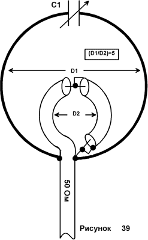
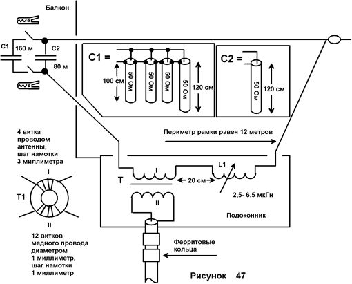

Передающие магнитные рамочные антенны
Магнитные рамочные антенны являются одним из интереснейших типов малогабаритных радиолюбительских антенн. Магнитные рамочные антенны впервые были использованы армией США в качестве передающих в 1967 году во вьетнамской войне. После этого магнитные рамки прочно заняли свое место среди малогабаритных антенн других типов, используемых радиолюбителями и профессионалами. Магнитные рамочные антенны часто являются единственным типом передающих антенн, которые могут быть установлены в ограниченном пространстве города. Во многих случаях магнитные рамки могут обеспечить более эффективную работу в эфире по сравнению с другими типами укороченных и суррогатных антенн.
Несмотря на то, что во всем мире магнитные рамки стали широко использовать сразу после их появления, в СССР эти антенны долгое время находились под негласным запретом. Как же, это же были антенны американских агрессоров, магнитные рамки позволяли работать скрытно из города радиохулиганам, и что было особенно нехорошо, по рукам ходили схемы магнитных рамок, при помощи которых можно было хоть как избавиться от журчания и воя глушилок «Голоса Америки» и других западных радиостанций. В конце 80, в связи с перестройкой, запрет на печать материалов по магнитным рамкам был снят, и в советской радиолюбительской литературе появились публикации о магнитных рамках…
В этой статье будут рассмотрены основы теории работы передающих магнитных рамочных антенн. В заключение будут приведены некоторые практические конструкции магнитных рамочных антенн, подходящие к установке в городских условиях.
Магнитные рамочные антенны
Теории работы магнитной рамочной антенны посвящено множество различных публикаций в радиолюбительской литературе. Классической публикацией, рассматривающей многие стороны работы магнитной рамки, конечно, является книга [1], написанная Ted Hart, W5QJR. В отечественной литературе магнитная рамочная антенна была описана в литературе [2]. Радиолюбителям, желающим более подробно изучить работу магнитных рамочных антенн, рекомендую обратиться к изданию [1],
Для радиолюбителей, интересующихся промышленными магнитными рамочными антеннами, приведем название некоторых фирм, производящих этот тип антенн. Пионером, который начал производство магнитных рамочных антенн для радиолюбителей, является Cristian Kaferlin, DK5CZ, Germany. Им до сих пор производится знаменитая серия магнитных антенн под фирменным названием «АМА», аббревиатура от Abstimmbare Magnetische Antenna, или, в переводе на русский, «настраиваемая магнитная антенна». Вид и технические характеристики антенн типа АМА представлены на вебсайте [3]. Магнитные антенны DK5CZ имели настолько удачную конструкцию и высокие эксплуатационные параметры, что стали основой для копирования другими радиолюбителями, и даже другими коммерческими фирмами. Так что описания магнитных антенн, которые являются практически полными близнецами антенн серии АМА, можно найти во многой радиолюбительской литературе. Магнитные антенны, несколько отличающиеся по конструкции от антенн серии АМА, производятся Ciro Mazzoni, Italy. Вид и описание этих антенн можно найти на его вебсайте [4]. В США магнитные антенны производятся по настоящее время фирмой MFJ, под названием «Super High – Q Loop». Ранее в США фирма AEA выпускала магнитные антенны под торговой маркой «Isoloop».
Ниже мы рассмотрим упрощенную теорию магнитных рамочных антенн, которая будет нужна радиолюбителю для понимания работы этого типа удивительных антенн.
Что такое магнитная рамка
Магнитная рамочная антенна имеет вид петли из проводника, которая подключена к конденсатору переменной емкости. Периметр петли обычно находится в пределах от 0,03λ до 0,25λ. Петля может иметь любую форму, наиболее распространена петля, выполненная в форме круга, как это и показано на рис. 1. Антенна, имеющая форму круга, считается классической магнитной рамочной антенной. Именно магнитные антенны, имеющие круглую форму петли, производят фирмы, специализирующиеся на выпуске магнитных антенн для радиолюбителей.
Классическая рамочная магнитная антенна
Для практического выполнения магнитной рамочной антенны, предназначенной для работы на конкретном диапазоне волн, радиолюбителю необходимо знать периметр петли, диаметр провода, из которого выполнена петля, емкость конденсатора и способ подключения фидера к рамке. Для того, чтобы разобраться какой вклад в работу магнитной рамочной антенны вносит каждый из этих параметров, перейдем к рассмотрению эквивалентной схемы антенны.
Элементы эквивалентной схемы магнитной рамки
Эквивалентная схема магнитной рамочной антенны показана на рис. 2. Как видно из этой схемы, магнитную рамочную антенну можно представить в виде параллельно включенных конденсатора и катушки, последовательно с которыми включены два сопротивления, одно из них, сопротивление потерь Rпот, а второе, сопротивление излучения Rизл и генератор G, который возбуждает эту антенну. Рассмотрим более подробно физическую эквивалентность и значения этих компонентов в работе магнитной антенны.
Эквивалентная схема магнитной рамочной антенны
Переменный конденсатор C из эквивалентной схемы соответствует физическому переменному конденсатору магнитной антенны, показанной на рис. 1. Катушка индуктивности L из эквивалентной схемы соответствует индуктивности петли проводника, составляющего магнитную антенну. Как видите, можно руками потрогать на реальной магнитной рамке эти составляющие эквивалентной схемы, при помощи простых приборов мы можем измерить их реальные значения.
Для работы магнитной рамочной антенны на передачу этот параллельный контур настраивают в резонанс на рабочую частоту антенны. Как известно, в этом случае реактивные сопротивления переменного конденсатора C и катушки индуктивности L равны по величине сопротивления, но противоположны по знаку. То есть, на резонансной частоте антенны сумма этих сопротивлений равна нулю, и к генератору G, возбуждающего антенну, остаются подключенными только сопротивление потерь Rпот и сопротивление излучения Rизл.
Сопротивление потерь Rпот и сопротивление излучения Rизл не могут быть так просто представлены их физическими эквивалентами, их нельзя потрогать руками как это было с переменным конденсатором и катушкой индуктивности. Для реальной магнитной рамки эти величины, в общем случае, рассчитываются теоретически или определяются практически на основании некоторых специфических измерений параметров работы передающей рамки. Однако сопротивление потерь и сопротивление излучения имеют вполне определенный физический смысл, и часто используются для описания параметров магнитных рамочных антенн. Рассмотрим более подробно, что же собой представляют эти величины.
Сопротивление излучения и сопротивление потерь антенны
Допустим, что генератор G (см. рис. 2), который включен в магнитную рамку, идеально согласован с этой антенной и отдает в нее некоторую определенную мощность. Во многих случаях не представляет труда определить, какая мощность поступает от генератора в нагрузку, в данном случае в магнитную рамку.
Однако, не вся мощность, которая отдается генератором в антенну, излучается в эфир. Некоторая часть мощности генератора Pпот безвозвратно теряется виде тепловых потерь в металлических и диэлектрических частях антенны, в окружающих антенну предметах, в земле. Через эту, теряемую мощность, и выражают сопротивление потерь антенны.
Rпот = Pпот/I2
где I- действующее значение тока в антенне.
Итак, можно сказать, что сопротивление потерь антенны формально представляет собой коэффициент, зная который можно определить мощность потерь в антенне по обычной формуле электротехники: Pпот= I2Rпот.
Та часть мощности, которая не рассеялась в тепло на сопротивлении потерь в рамке, все же излучается в эфир. На основе некоторых специфических измерений можно определить эту излученную мощность Pизл. Вот через эту, излучаемую в эфир мощность, и выражают через сопротивление излучения антенны.
Rизл = Pизл/I2
где I- действующее значение тока в антенне.
Итак, можно сказать, что сопротивление излучения антенны формально представляет собой коэффициент, зная который можно определить мощность излучения антенны по обычной формуле электротехники: Pизл= I2Rизл. Такоеопределение сопротивления излучения антенны приведено в литературе [5], и оно, на мой взгляд, наиболее верно выражает суть Rизл. Понятие «сопротивление излучения» было введено М. В. Шулейкиным (1884- 1939), выдающимся советским исследователем антенн и распространения радиоволн.
Заметим, что приведенные выше формулы справедливы для проволочных антенн с равномерным распределением тока в полотне антенны, каковыми и являются магнитные рамки.
Коэффициент полезного действия магнитной рамки
Итак, в нашей эквивалентной схеме, показанной на рис. 2, к генератору подключено последовательно два сопротивления, на одном из них мощность генератора теряется, а на другом выделяется мощность, идущая на излучение в эфир. Руководствуясь этой схемой, можно найти коэффициент полезного действия антенны. КПД, через сопротивление потерь и сопротивление излучения антенны выражается как:
КПД= (Rизл/(Rизл + Rпот))*100%
Значения сопротивление потерь и сопротивление излучения антенны зависят от размеров антенны, от ее размещения в пространстве, от материалов, используемых для конструкции антенны. В радиолюбительских условиях точно определить эти величины экспериментальным путем достаточно сложно, так, как для этого необходимо проделать множество специфических измерений и использовать специальное дорогостоящее измерительное оборудование. Однако, сопротивление потерь и сопротивление излучения магнитных рамок вполне можно определить при помощи программ расчета антенн.
Программы расчета антенн в моделировании магнитных рамок
В настоящее время радиолюбитель имеет возможность использовать компьютерные программы расчета антенн для моделирования магнитных рамок. Эти программы могут определить сопротивление потерь и сопротивление излучения, нарисовать диаграмму направленности магнитной рамки, рассчитать емкость конденсатора, необходимую для настройки рамки на определенную частоту работы антенны.
Мной были проделаны расчеты магнитных рамочных антенн с использованием таких известных и надежных программ как MMANA (на основе MININEC) и NECWin Plus (на основе NEC-2), а затем полученные результаты были сравнены с теми, что выдали упрощенные специализированные программы, предназначенных для расчета магнитных рамок. Это программа Magnetic Loop Antenna Calculator v.1.6, KI6GD, и Magloop4, G4FGQ. Программа KI6GD позволяет произвести расчет параметров магнитной рамки в свободном пространстве, а программа G4FGQ позволяет произвести расчет параметров магнитной рамки расположенной на заданной высоте от земли, причем параметры земли можно задать.
Было выяснено, что все эти программы для рамок, расположенных в свободном пространстве выдают примерно одинаковые значения сопротивления потерь и сопротивления излучения. Данные по емкости конденсатора все программы выдают несколько отличающиеся друг от друга, но это в данном случае не столь существенно, так, как при конструировании реальной магнитной рамочной антенны емкость конденсатора все равно нуждается в подстройке, и не равна точно емкости, рассчитанной программно. При расчете различными программами параметров рамочных антенн, расположенных над землей, их параметры, уже начинали заметно отличаться друг от друга, однако, это отличие было не настолько большим, и для радиолюбительской практики для расчета магнитных рамок можно использовать любую их этих программ.
Программа расчета антенн на основе MININEC (в данном случае MMANA) имеет некоторые проблемы при расчете антенн, расположенных над реальной землей, хотя хорошо обсчитывает антенны, расположенные в свободном пространстве и над идеальной проводящей поверхностью. При закладке моделей магнитных рамочных антенн в MMANA и NECWin следует учитывать ограничения, предполагаемые этими программами.
Параметры магнитных рамочных антенн
При помощи программы KI6GD, MagneticLoopAntennaCalculatorv.1.6, мной были вычислены параметры магнитных рамочных антенн для работы на любительских диапазонах 80- 10 метров, выполненных на основе стандартных спортивных алюминиевых обручей диаметром 77 сантиметров и 100 сантиметров и диаметром трубки 17 миллиметров. Эти обручи можно недорого приобрести в магазинах спортивных товаров. Параметры рамок сведены в таблицы, которые могут быть полезны при конструировании магнитных рамочных антенн на основе стандартных спортивных обручей. Табл. 1 показывает параметры магнитной рамочной антенны выполненной на обруче диаметром 77 сантиметров, а табл. 2 показывает параметры магнитной рамочной антенны, выполненной на обруче диаметром 100 сантиметров.
Таблица 1 Данные магнитной рамки выполненной на алюминиевом обруче диаметром 77 сантиметров
|
Частота настройки рамки, МГц |
3.6 |
7.03 |
10.1 |
14.06 |
18.1 |
21.1 |
25.0 |
28.5 |
|
Полоса пропускания, кГц |
8.1 |
11.6 |
14.8 |
20.7 |
31 |
43.1 |
67.5 |
100.8 |
|
Емкость конденсатора, пФ |
849 |
217 |
101 |
48.6 |
26.3 |
17.4 |
10.2 |
6.1 |
|
Напряжение на конденсаторе(при мощности подводимой к рамке 5 ватт), V |
300 |
600 |
700 |
800 |
900 |
900 |
800 |
800 |
|
Длина рамки, λ |
0.031 |
0.06 |
0.086 |
0.119 |
0.153 |
0.179 |
0.212 |
0.241 |
|
КПД рамки, % |
0.2 |
2.5 |
8.3 |
22.4 |
41 |
54.4 |
68.3 |
77.3 |
|
Индуктивное сопротивление рамки, Ом |
51.6 |
100.8 |
145 |
201.6 |
259 |
302.5 |
358 |
408.5 |
|
Добротность антенны, Qres |
442 |
604 |
681 |
680 |
585 |
489.5 |
370 |
282 |
|
Сопротивление излучения, |
0.00 |
.0002 |
0.009 |
0.033 |
0.091 |
0.168 |
0.331 |
0.558 |
|
Сопротивление потерь, Ом |
0.058 |
0.081 |
0.098 |
0.115 |
0.131 |
0.141 |
0.153 |
0.164 |
*Индуктивность рамки равна 2,282 мкГн
Таблица 2 Данные магнитной рамки выполненной на алюминиевом обруче диаметром 100 сантиметров
|
Частота настройки рамки, МГц |
3.6 |
7.03 |
10.1 |
14.06 |
18.1 |
21.1 |
25.0 |
|
Полоса пропускания, кГц |
8.4 |
12.4 |
16.8 |
27.1 |
47.5 |
73.3 |
125.6 |
|
Емкость конденсатора, пФ |
671 |
169 |
77.3 |
36.4 |
17.7 |
10.6 |
4,9 |
|
Capacitor |
400 |
600 |
700 |
800 |
800 |
700 |
700 |
|
Длина рамки, λ |
0.04 |
0.077 |
0.111 |
0.155 |
0.199 |
0.232 |
0,275 |
|
КПД рамки, % |
0.5 |
5.3 |
16.5 |
38.7 |
61 |
72.3 |
82.5 |
|
Индуктивное сопротивление рамки, Ом |
64.9 |
126.8 |
182.2 |
253.6 |
326.4 |
380.6 |
450,9 |
|
Добротность антенны, Qres |
427 |
568 |
600 |
520 |
381 |
287 |
197 |
|
Сопротивление излучения, |
0.00 |
.0006 |
0.025 |
0.094 |
0.259 |
0.478 |
0,942 |
|
Сопротивление потерь, Ом |
0.076 |
0.106 |
0.127 |
0.149 |
0.17 |
0.183 |
0,199 |
*Индуктивность рамки равна 2,287 мкГн
Параметры магнитных антенн в табличном представлении выглядят не очень наглядно, поэтому на основе табл. 1 были построены следующие графики, помогающие лучше представить поведение магнитной рамочной антенны:
- график добротности и КПД антенны в зависимости от периметра рамки (рис. 3);
- график сопротивления излучения, сопротивления потерь и емкости конденсатора рамки в зависимости от периметра рамки (рис. 4).
График добротности и КПД антенны в зависимости от периметра рамки
График сопротивления излучения, сопротивления потерь и емкости конденсатора рамки в зависимости от периметра рамки
Графики, приведенные на рис. 3, очень наглядно иллюстрируют физику работы магнитной рамочной антенны. Посмотрим сначала на график добротности антенны, который может нам много сказать о ее работе. С увеличением частоты работы антенны ее добротность растет, а затем начинает уменьшаться. В нашем случае это произошло при достижении длины антенны 0,1λ. И в тоже время, с уменьшением добротности антенны, начинает расти КПД ее работы. Обратимся к эквивалентной схеме антенны, что бы понять, почему это происходит.
Эквивалентная схема антенны состоит из последовательно включенных катушки, конденсатора и сопротивления потерь и сопротивления излучения (см. рис. 2). С увеличением частоты настройки антенны емкость конденсатора уменьшается, а индуктивность остается прежней. В этом случае возрастает характеристическое сопротивление контура Zх, которое равно:
Zx= √(L/C).
Добротность магнитной рамочной антенны Q равна:
Q= Zx/(Rпот + Rизл).
Следовательно, первоначальный рост добротности магнитной антенны можно объяснить большим ростом ее характеристического сопротивления и в тоже время малым ростом сопротивления потерь и сопротивления излучения антенны.
График сопротивление излучения магнитной рамочной антенны и сопротивление потерь в ней показан на рис. 4. Из этого рисунка видно, что после периметра петли антенны равной примерно 0,111λ сопротивление излучения антенны начинает резко возрастать. В тоже время, график сопротивления потерь антенны носит монотонный характер. Следовательно, если рост сопротивления излучения антенны значительно превысит рост сопротивления потерь, добротность антенны будет падать, а мощность, подводимая к антенне, будет в основном рассеиваться на сопротивлении излучения, или попросту говоря, излучаться в эфир. Это очень важный вывод для понятия работы магнитных рамочных антенн.
Каждая качественно выполненная магнитная рамка имеет свой критический периметр, после которого рост сопротивление излучения происходит стремительнее роста сопротивления потерь в ней. В нашем случае этот критический периметр для рамки, выполненной из алюминиевой трубы диаметром 17 миллиметров и длиной 77 сантиметров, оказался равным 0,111λ, или частота 12,5-МГц. Сопротивление излучения магнитной рамки периметром 0,111λ равно 0,025 Ом. Следовательно, для нашей конкретной рамки мы получим значительный рост КПД магнитной рамочной антенны после роста ее периметра для используемых длин волн более 0,1λ. Конечно, для городских условий работы желательно иметь рамку как можно меньшего размера, чтобы критический периметр рамки был меньше 0,1λ. Этого можно достигнуть выбрав соответствующим образом материал для изготовления магнитной рамочной антенны и использовав в ее конструкции переменный конденсатор с высокими параметрами.
Если для практического выполнения магнитной рамочной антенны использовать тонкий провод и низкодобротный конденсатор, то мы сделаем только эквивалент нагрузки антенны. Высокочастотная мощность, поступающая от передатчика в такую антенну, будет греть провод антенны, пластины и диэлектрик переменного конденсатора, а не излучаться в эфир. Для иллюстрации этого примера были рассчитаны параметры высокодобротной магнитной рамочной антенны, выполненной на обруче диаметром 77 сантиметров и толщиной 17 миллиметров, но выполненного из меди. Как известно, медь имеет проводимость почти в два раза более высокую по сравнению с алюминием. В противовес высокодобротной антенне были рассчитаны параметры низкодобротной магнитной рамочной антенны, имеющей диаметр 77 сантиметров, но выполненной медным проводом диаметром 1 миллиметр. Табл. 3 показывает параметры магнитной антенны, выполненной из медной трубки, а табл. 4 показывает параметры магнитной антенны, выполненной из медного провода диаметром 1 миллиметр. Сравните табл. 3 и 4 с табл. 1, где рассчитаны параметры магнитной антенны выполненной на основе алюминиевого обруча.
Таблица 3 Данные магнитной рамки выполненной на медном обруче диаметром 77 сантиметров, толщина обруча 17 миллиметров
|
Частота настройки рамки, МГц |
3.6 |
7.03 |
10.1 |
14.06 |
18.1 |
21.1 |
25.0 |
28.5 |
|
Полоса пропускания, кГц |
3.1 |
4.7 |
6.4 |
10.8 |
19.7 |
31.1 |
54.4 |
86.7 |
|
Емкость конденсатора, пФ |
849 |
217 |
101 |
48.6 |
26.3 |
17.4 |
10.2 |
6.1 |
|
Напряжение на конденсаторе(при мощности подводимой к рамке 5 ватт), V |
500 |
900 |
1100 |
1100 |
1100 |
1000 |
900 |
800 |
|
Длина рамки, λ |
0.031 |
0.06 |
0.086 |
0.119 |
0.153 |
0.179 |
0.212 |
0.241 |
|
КПД рамки, % |
0.6 |
6.2 |
18.5 |
42.8 |
64.4 |
75.6 |
84.9 |
89.9 |
|
Индуктивное сопротивление рамки, Ом |
51.6 |
100.8 |
145 |
201.6 |
259 |
302.5 |
358 |
408.5 |
|
Добротность антенны, Qres |
1144 |
1510 |
1565 |
1303 |
919 |
681 |
460 |
328 |
|
Сопротивление излучения, |
0.00 |
.0002 |
0.009 |
0.033 |
0.091 |
0.168 |
0.331 |
0.558 |
|
Сопротивление потерь, Ом |
0.022 |
0.031 |
0.037 |
0.044 |
005 |
0.054 |
0.059 |
0.063 |
*Индуктивность рамки равна 2,282 мкГн
Таблица 4 Данные магнитной рамки диаметром 77 сантиметров выполненной из провода диаметром 1 миллиметр
|
Частота настройки рамки, МГц |
3.6 |
7.03 |
10.1 |
14.06 |
18.1 |
21.1 |
25.0 |
28.5 |
|
Полоса пропускания, кГц |
30 |
43 |
52 |
63.4 |
76.3 |
88 |
107 |
131.6 |
|
Емкость конденсатора, пФ |
488 |
122 |
55 |
25 |
12 |
6.9 |
2.7 |
0.6 |
|
Напряжение на конденсаторе(при мощности подводимой к рамке 5 ватт), V |
200 |
400 |
500 |
600 |
700 |
800 |
800 |
800 |
|
Длина рамки, λ |
0.031 |
0.06 |
0.086 |
0.119 |
0.153 |
0.179 |
0.212 |
0.241 |
|
КПД рамки, % |
0.0 |
0.4 |
1.4 |
4.2 |
9.6 |
15.4 |
24.8 |
34.3 |
|
Индуктивное сопротивление рамки, Ом |
89.2 |
174 |
250 |
348 |
448 |
522 |
619 |
705 |
|
Добротность антенны, Qres |
117 |
163 |
193 |
221 |
237 |
239 |
232 |
216 |
|
Сопротивление излучения, |
0.00 |
.0002 |
0.009 |
0.033 |
0.091 |
0.168 |
0.331 |
0.558 |
|
Сопротивление потерь, Ом |
0.381 |
0.532 |
0.638 |
0.752 |
0.853 |
0.922 |
1.033 |
1.071 |
*Индуктивность рамки равно 3,92 мкГн
Рис. 5 показывает график добротности и КПД антенны выполненной из медной трубки в зависимости от периметра рамки выраженного в относительно длины волны λ. Использование медной трубки вместо алюминиевой приводит к значительному улучшению работы магнитной рамки. Уже при длине периметра рамки 0,086λ, или начиная с частоты 10-МГц, КПД антенны резко растет, а добротность антенны падает. Это говорит о том, что начиная с периметра рамки 0,086λ рост сопротивления излучения антенны значительно опережает рост потерь. КПД медной антенны примерно на 20 процентов больше чем КПД антенны сделанной из алюминиевой трубки.
График добротности и КПД магнитной антенны из медной трубки в зависимости от периметра рамки.
Рис. 6 показывает график добротности и КПД антенны выполненной из медного провода диаметром 1 миллиметр в зависимости от периметра рамки выраженного в относительно длины волны λ. Использование тонкого медного провода вместо медной или алюминиевой трубки приводит к значительному ухудшению работы магнитной рамки. Индуктивность рамки антенны выполненной из провода диаметром 1 миллиметр равна 3,92-мкГн, что выше индуктивности полотна антенны выполненного из трубки, которая составляет 2,282-мкГн. Повышение индуктивности рамки приводит к тому, что для настройки антенны на высокочастотные диапазоны требуется конденсатор гораздо меньшей емкости, по сравнению с антенной, выполненной из трубки. Это ведет к тому, что для частот выше 25-МГц эта рамка не может быть практически реализована. КПД антенны начинает медленно расти только после частоты 21-МГц. Это говорит о том, что, начиная с длины периметра рамки 0,18λ, рост сопротивления излучения антенны начинает немного опережать рост потерь в магнитной антенне. Однако, как было указано выше, для частот более 25-МГц эта рамка вряд ли может быть практически реализована.
График добротности и КПД магнитной антенны из провода диаметром 1 миллиметр в зависимости от периметра рамки.
Следовательно, проволочная магнитная рамочная антенна сможет обеспечить удовлетворительную работу только на одном диапазоне 25-МГц. Магнитная рамочная антенна идентичного диаметра, но выполненная из медной трубки диаметром 17 миллиметров сможет обеспечить удовлетворительную работу на диапазоне 30 метров, хорошую работу на диапазонах 20-17 метров и отличную на диапазонах 15- 10 метров.
В приведенных выше примерах было предположено, что добротность конденсатора составляет не менее 1000, что в общем то типично для большинства типов переменных конденсаторов с воздушным диэлектриком. Использование конденсатора с меньшей добротностью приведет к тому, что КПД магнитной рамочной резко упадет. Это можно легко посмотреть на моделях магнитных антенн в программе MMANA. Практика тоже дает подтверждение этому. В моих экспериментах с магнитными антеннами мной было замечено, что прижимные контакты некоторых низкодобротных конденсаторов буквально светятся в темноте от множества микроскопических искр. Естественно, что работа рамочной антенны с таким конденсатором «пожирателем» высокочастотной энергии будет неудовлетворительной.
Форма магнитных рамочных антенн
Программы моделирования магнитных рамочных антенн показывают, что наибольшим усилением, при одинаковом периметре, обладает магнитная рамка в форме круга. Это и понятно, так, как круг охватывает наибольшую площадь по сравнению с другими фигурами.
Однако, в некоторых случаях по конструктивным соображениям удобно выполнять магнитную рамку в форме других фигур, например, равностороннего треугольника, квадрата, восьмиугольника. Если выполнение такой магнитной рамки удобно для радиолюбителя, то его конечно можно использовать, примирившись с незначительной потерей усиления.
Одновитковая или многовитковая рамка
Выше была описана работа одновитковых рамок. Радиолюбительские специализированные программы для магнитных рамок (MagneticLoopAntennaCalculatorv.1.6, KI6GD, и Magloop4, G4FGQ) тоже позволяют рассчитывать только одновитковые рамки. Одновитковые рамки вполне применимы для работы на высокочастотных диапазонах. Но радиолюбители стремятся использовать магнитные рамки и для работы на низкочастотных диапазонах, где их критический периметр уже может достигать значительной величины. То есть, такие рамки будут неудобными в установке. Закономерен вопрос, возможно ли в целях уменьшения места для установки антенны использовать многовитковые магнитные рамочные антенны для работы на низкочастотных диапазонах, а если возможно, то целесообразно ли это?
Программа MMANA дала ответ на этот вопрос. С использованием этой программы были рассчитаны параметры 1, 2, 3 и 4 витковой магнитной рамочной антенны со стороной 1,2 метра выполненной из медного провода диаметром 0,8 миллиметра и настроенной на частоту 3,8-МГц любительского диапазона 75 метров. Расстояние между витками было равно 2 сантиметра. Затем были рассчитаны параметры одновитковых рамок имеющих периметр, одинаковый с периметром многовитковых рамок. Добротность конденсатора настройки было выставлена равной бесконечности и 1000. Во время расчета было принято, что эти антенны расположены в свободном пространстве. Для расчета параметров 3 и 4 витковой магнитной рамочной антенны были использованы файлы антенн, составленные И. Гончаренко, DL2KQ- EU1TT, и находящиеся на его сайте [6]. Файлы для 1 и 2 витковой рамочной антенны были составлены мной. Результаты расчетов сведены в табл. 5.
Таблица 5 Сравнительные параметры рамочных антенн
|
Периметр рамки, м |
Описание рамки/ вид рамки |
Емкость конденсатора для настройки на частоту 3,8-МГц, пФ |
Усиление антенны, dBi, * |
Выигрыш одновитковой рамки по сравнению с многовитковой, dB, ** |
Снижение усиления в антенне с реальным конденсатором, dB |
|
4,8 |
1 виток, квадрат со сторонами 1,2 метра |
390 |
-22,0 / -23,7 |
- |
-1,7 |
|
9,6 |
2 витка, квадрат со сторонами 1,2 метра |
81 |
-20,5 /-22,0 |
7 / 7,8 |
-1,5 |
|
1 виток, квадрат со сторонами 2,4 метра |
120 |
-13,5/-14,7 |
-1,2 | ||
|
14,4 |
3 витка, квадрат со сторонами 1,2 метра |
18,7 |
-18,8 /-20,15 |
10 / 10,6 |
- 1,35 |
|
1 виток, квадрат со сторонами 3,6 метра |
75 |
-8,8/-9,9 |
-1,1 | ||
|
19,2 |
4 витка, квадрат со сторонами 1,2 метра |
14,5 |
-17,25/-18,4 |
11,85/12,1 |
- 1.15 |
|
1 виток, квадрат со сторонами 4,8 метра |
50 |
-5,4/-6,3 |
-0,9 |
* Числитель показывает усиление рамки с конденсатором с бесконечной добротностью, знаменатель показывает усиление рамки при использовании в ней конденсатора с добротностью равной 1000.
** В числителе показан выигрыш усиления при использовании в магнитной рамки конденсатора с бесконечной добротностью а в знаменателе показан выигрыш усиления при использовании в магнитной рамки конденсатора с добротностью равной 1000.
Как видно из этой таблицы, увеличение числа витков рамочной антенны дает проигрыш в 7,8-dB для рамки из двух витков, или по шкале S- метра трансивера это немного больше 1 балла. При хорошем прохождении этот проигрыш в усилении будет малозаметен. Для рамки из трех витков проигрыш составляет 10-dB или по шкале S- метра трансивера это чуть больше 1,5 балла. И для этой рамки при хорошем прохождении проигрыш в усилении тоже будет малозаметен. Однако для рамки из четырех витков проигрыш в усилении составляет уже 12-dB, или 2 балла по шкале S- метра трансивера. А это уже может сказаться на работе в эфире. Обратите внимание, что чем длиннее рамка, тем меньше влияет добротность конденсатора на ее работу. Это связано во первых с увеличением потерь в полотне антенны, а во вторых, с ростом сопротивления излучения антенны.
Практическая конструкция многовитковой рамки сложнее, чем одновитковой. По некоторым причинам, согласование многовитковой магнитной рамочной антенны с коаксиальным кабелем сопряжено с большими сложностями, чем одновитковой, что еще более уменьшает эффективность использования многовитковых рамочных антенн. Справедливости ради необходимо отметить, что при увеличении расстояния между витками многовитковой рамочной антенны происходит небольшое увеличение усиления этой антенны, однако, возрастают сложности при ее практическом изготовлении. Увеличится усиление рамки при использовании в ее конструкции провода большого диаметра. Но все же, несмотря на недостатки многовитковых рамок, при дефиците места, они вполне могут быть использованы. мой взгляд, сложности, возникающие при изготовлении и установке многовитковых рамочных антенн, превышают преимущества в выигрыше места, которые эти антенны могут дать. Поэтому в этой статье многовитковые рамочные антенны рассматриваться не будут.
Конденсаторы магнитной рамочной антенны
Итак, работа магнитной рамочной антенны значительно зависит от используемого для ее построения материала. В конструкции антенны необходимо использовать переменные конденсаторы, имеющие высокую добротность. Это вакуумные конденсаторы и конденсаторы, не имеющие прижимных и скользящих контактов, например, типа «бабочка». Для работы магнитной рамки на небольших мощностях можно использовать двухсекционный конденсатор, в котором к рамке подключены только статорные (неподвижные) пластины. Не следует применять конденсаторы с твердым диэлектриком из-за их низкой добротности, которая к тому же начинает резко падать с увеличением высокочастотного напряжения на керамическом конденсаторе.
При расчете параметров рамки, в которой используется качественный воздушный конденсатор, можно принять, что он имеет добротность равную 1000. Если переменный конденсатор имеет плохие контакты ротора и окисленные пластины, то его добротность будет уже гораздо ниже 1000. Если с плохими контактами ротора в спаренном конденсаторе переменной емкости можно бороться, подключив к рамке только статорные секции, то с окислом на пластинах уже ничего поделать нельзя. В этом случае возможно использование самодельных переменных конденсаторов с воздушным диэлектриком. Среди радиолюбителей распространены самодельные конденсаторы тромбонного типа, дисковые конденсаторы и конденсаторы типа «бабочка». Рассмотрим упрощенную конструкцию каждого их этих типов конденсаторов.
Конденсаторы тромбонного типа наиболее сложны в механическом выполнении, но и они могут быть изготовлены в любительских условиях. В конденсаторах тромбонного типа в медную отполированную внутри трубку входит другая трубка, меньшего диаметра. Емкость между этими трубками и составляет емкость тромбонного конденсатора. Для ухода от трущихся или прижимных контактов, как правило, используют бесконтактные тромбонные конденсаторы. Рис. 7 показывает упрощенную конструкцию бесконтактного тромбонного конденсатора. Для этого к концам магнитной антенны 1 припаивают две трубки большого диаметра 2. Трубка меньшего диаметра 3 сгибается буквой П, устанавливается на диэлектрическую площадку 4 и перемещается по винту 5 относительно трубки большего диаметра. В результате этого происходит увеличение или уменьшение емкости тромбонного конденсатора. Конденсаторы тромбонного типа, в зависимости от их конструкции, могут обеспечить емкость до 100 пикофарад и точную настройку конденсатора на необходимую емкость, что обеспечит работу магнитной рамочной антенны в нескольких соседних любительских диапазонах. Недостатком тромбонного конденсатора является сложность его изготовления.
Упрощенная конструкция тромбонного конденсатора
Конденсаторы дискового типа являются очень простыми по конструкции и легко могут быть выполнены радиолюбителем, обладающим небольшим опытом в механических работах. В конденсаторах дискового типа один диск перемещается относительно другого. Емкость этих дисков друг относительно друга составляет емкость дискового конденсатора. Рис. 8 показывает упрощенную конструкцию дискового конденсатора. Для изготовления дискового конденсатора к концам магнитной рамочной антенны 1 припаивают неподвижный диск 2. Подвижный диск 3, одинаковый по размерам с неподвижным диском, перемещается относительно неподвижного диска при помощи винта 4 и гайки 5, припаянной к другому концу магнитной антенны. Пружина 6 между подвижным диском и гайкой 5 служит для улучшения электрического контакта подвижного диска и магнитной антенны. Конденсаторы дискового типа, в зависимости от величины дисков, могут обеспечить емкость до 50 и более пикофарад и точную настройку конденсатора на необходимую емкость, что обеспечит работу магнитной рамочной антенны в нескольких соседних любительских диапазонах. Недостатком дискового конденсатора является наличие трущегося контакта, что может служить причиной увеличения сопротивления потерь в магнитной рамочной антенне.
Упрощенная конструкция дискового конденсатора
Для устранения трущегося контакта используют конденсаторы типа «бабочка». Рис. 9 показывает упрощенную конструкцию радиолюбительского конденсатора типа «бабочка». В конденсаторах типа «бабочка» используются две неподвижные пластины, относительно которых перемещается одна подвижная пластина, своим видом напоминающая крылья бабочки, откуда и пошло это название. Емкость неподвижных пластин на подвижную образуют емкость этого конденсатора. Для изготовления самодельного конденсатора типа «бабочка», берется плата из толстого фольгированного стеклотекстолита 1, на ней печатным методом изготавливают пластины конденсатора 2, эти пластины припаивают к магнитной антенне 3. Ротор 4 может быть изготовлен из фольгированного стеклотекстолита или из медной пластины. Ротор устанавливают на ось 5. Конденсаторы типа «бабочка», в зависимости от величины пластин и зазора между ними, могут обеспечить емкость до 50 и более пикофарад и точную настройку конденсатора на необходимую емкость, что обеспечит работу магнитной рамочной антенны в нескольких соседних любительских диапазонах. Недостатком этого типа конденсатора являются его относительно большие размеры и сложность изготовления.
Упрощенная конструкция дискового конденсатора типа «бабочка»
При установке магнитной рамочной антенны следует обратить внимание на то, что бы паразитная емкость конденсатора настройки на землю или другие посторонние предметы была минимальной.
Полотно магнитной рамочной антенны
Для того, чтобы магнитная рамочная антенна работала с высоким КПД, величина сопротивления потерь в полотне магнитной антенны должна быть сравнима или меньше чем сопротивление излучения антенны. Обычно такое возможно только для магнитных антенн выполненных из медных полированных трубок для диапазонов частот выше 14-МГц. Для других нижних диапазонов полотно антенны выполняют из толстого провода, который обладает довольно существенным сопротивлением потерь, что приводит к снижению эффективности работы магнитных рамок. Однако, несмотря на это, на практике магнитные антенны успешно используются для работы и на нижних любительских диапазонах. Это связано с тем, что другие укороченные антенны там работают еще хуже, чем магнитные рамочные антенны.
Расположение магнитной антенны должно быть таким, чтобы ее паразитная емкость на землю и посторонние предметы была минимальной.
Приемные магнитные рамки
Конечно, если магнитная рамочная антенна работает только на прием, особых проблем с высоким КПД ее работы нет. Для таких рамок вполне можно использовать конденсаторы с твердым диэлектриком или воздушные с трущимися контактами. Приемные рамки часто тоже делают многовитковыми, что позволяет уменьшить их физические размеры. Для полотна приемной рамочной антенны можно использовать относительно тонкий провод. Но для передающих антенн такое практическое выполнение неприемлемо, поскольку почти вся мощность передатчика в этом случае пойдет на нагрев рамки.
Оплетка коаксиального кабеля в полотне магнитной рамочной антенны
Можно прочитать рекомендации по использованию в полотне магнитной рамки оплетки коаксиального кабеля вместо медной трубки или толстого провода. Однако, следует весьма осторожно использовать коаксиальный кабель, покрытый пластиковой оболочкой для изготовления магнитных рамочных антенн. Особенно это относится к коаксиальным кабелям, покрытым черной пластиковой оболочкой. В черной пластиковой оболочке коаксиального кабеля содержится сажа. Это сделано специально, для поглощения обратной волны протекающей по внешней стороне оплетки коаксиального кабеля. Для коаксиального кабеля, работающего в качестве фидера, это является ценным свойством, но при использовании такого коаксиального кабеля в качестве полотна магнитной антенны, это приводит к тому, что такая антенна будет иметь низкий КПД при работе на передачу.
Однако, из такого коаксиального кабеля, имеющего оболочку с сажей, вполне можно выполнять полноразмерные антенны коротких волн, как об этом было написано в литературе [7]. Дело в том, что полноразмерные антенны имеют сопротивление излучение находящееся в пределах 50-100-Ом, и те несколько Ом сопротивления потерь, что добавит во входное сопротивление антенны «сажная» оболочка коаксиального кабеля не отразятся значительно на КПД этих антенн.
Еще один фактор, приводящий к увеличению потерь в оболочке коаксиального кабеля, заключается в том, что по полотну магнитной рамки протекают значительные высокочастотные токи, большие по величине токов протекающих по полотну полноразмерной антенны, при той же излучаемой ей мощности, что и у магнитной рамочной антенны. Во многих диэлектриках потери возрастают не пропорционально росту напряженности поля, а имеют квадратичную зависимость. Это еще более увеличивает значение сопротивления потерь для магнитной рамочной антенны выполненной из коаксиального кабеля, покрытого пластиковой оболочкой.
Определение потерь в пластиковой оболочке коаксиального кабеля на основе изменения напряжения на конденсаторе магнитной рамки
Несмотря на описанные выше недостатки коаксиальных кабелей, покрытых пластиковыми оболочками, они продолжают использоваться для изготовления любительских магнитных рамочных антенн. Однако, перед изготовлением магнитной антенны с полотном из коаксиального кабеля желательно убедиться, что оболочка коаксиального кабеля не вносит дополнительных потерь в полотно антенны. В противном случае эту оболочку необходимо снять. Рассмотрим, как можно практически определить степень потерь, вносимых в работу магнитной рамочной антенны пластиковой оболочкой коаксиального кабеля.
Для этого обратимся к рис. 10. Этот рисунок показывает теоретическую зависимость напряжения на конденсаторе магнитной рамочной антенны (конечно, настроенной в резонанс) от длины антенны выраженной в длинах волн (λ) для магнитных антенн, выполненных из разного материала, при подводимой мощности к антенне равной 5 ватт. Из этого рисунка видно, что чем меньше сопротивление потерь в антенне, тем сильнее смещен максимум напряжения на конденсаторе магнитной рамочной антенны в сторону низких частот. Этот эффект понятен и был разобран выше. Чем меньше сопротивление потерь в рамке, тем меньше ее критический периметр, при котором сопротивление излучения начинает превышать сопротивление потерь, и, следовательно, тем при меньшем периметре, выраженном в длинах волн, начинается уменьшение добротности рамки, и как следствие этого, уменьшение напряжения на конденсаторе рамки.
Зависимость напряжения на конденсаторе настроенной в резонанс магнитной антенны от периметра антенны
Из этого рисунка виден простой способ измерения потерь вносимых оболочкой коаксиального кабеля в антенну. Для этого измеряют напряжение на конденсаторе магнитной антенны, полотно которой выполнено из коаксиального кабеля в пластиковой оболочке, на разных частотах ее настройки, затем оболочку снимают, и снова измеряют высокочастотное напряжение на конденсаторе магнитной антенны на тех же частотах ее настройки. Если график распределения напряжения существенно изменился, и сдвинулся в сторону низких частот, значит, в этом случае пластиковая оболочка вносит потери в работу антенны.
Проведя измерения по этой методике также можно качественно судить об общем сопротивлении потерь в магнитной рамочной антенне. Магнитные антенны, имеющие малое сопротивление потерь, имеют четко выраженный максимум высокочастотного напряжения, с увеличением сопротивления потерь эта зависимость сглаживается, и у рамок с большим сопротивлением потерь, напряжение на конденсаторе зависит от частоты почти по линейному закону. Дополнительное сопротивление потерь в магнитную рамочную антенну, полотно которой выполнено из оплетки коаксиального кабеля, может вносить конденсатор настройки антенны.
Обратите внимание на то, что электрическая длина полотна антенны, выполненной из коаксиального кабеля покрытого оболочкой немного больше, чем для кабеля без пластиковой оболочки. Однако, поскольку мы проводим качественные измерения потерь, вносимых пластиковой оболочкой в работу магнитной рамки, на точность измерения это существенно не влияет.
Измерение напряжения на конденсаторе магнитной рамочной антенны сопряжено с рядом трудностей чисто практического характера, о которых будет сказано ниже. Поэтому, для определения потерь, вносимых в магнитную рамку оболочкой коаксиального кабеля, радиолюбители с успехом могут использовать более простой способ, который будет описан в следующем параграфе.
Определение потерь в пластиковой оболочке коаксиального кабеля на основе изменения полосы пропускания магнитной рамки
Качественно величину сопротивления потерь, вносимых оболочкой коаксиального кабеля в работу магнитной рамочной антенны можно определить, руководствуясь изменением полосы пропускания магнитной рамки выполненной из коаксиального кабеля в пластиковой изоляции и без нее. Рис. 11 показывает график теоретической зависимости полосы пропускания настроенной в резонанс магнитной рамочной антенны от периметра антенны, выраженного в длинах волн (λ), для магнитных антенн, выполненных из разного материала. Из этого графика видно, что чем меньше сопротивление потерь в магнитной рамочной антенне, тем сильнее отличие в полосе пропускания антенны на нижних и верхних диапазонах ее работы. В магнитной рамочной антенне, имеющей низкое сопротивление потерь, вид зависимости полосы пропускания антенны от частоты близок к квадратичной линии, а в магнитной антенне с большим сопротивлением потерь, вид этого графика близок к обычной прямой линии. Этот график тоже понятен, чем меньше сопротивление потерь в антенне, тем уже ее полоса пропускания. От характера роста сопротивления потерь и сопротивления излучения, а также от величины потерь, постоянно вносимых в рамку, и зависит вид этого графика.
Зависимость полосы пропускания настроенной в резонанс магнитной антенны от периметра антенны
Этот рисунок показывает еще один простой способ для качественного определения величины сопротивления потерь вносимых оболочкой коаксиального кабеля в работу магнитной антенны. Для этого измеряют полосу пропускания магнитной антенны, выполненной из коаксиального кабеля в пластиковой оболочке, затем оболочку снимают, и снова измеряют полосу пропускания антенны. Если полоса пропускания на нижних диапазонах антенны уменьшилась, значит, оболочка коаксиального кабеля вносит потери в работу магнитной рамки. По степени сужения полосы пропускания судят о величине потерь, вносимых оболочкой коаксиального кабеля в работу магнитной рамки. При практическом исследовании полосы пропускания антенны полезно иметь теоретически построенный график полосы пропускания магнитной антенны выполненной из медной трубки диаметром равной диаметру оплетки коаксиального кабеля. Этот график позволит судить о потерях вносимых в рамку переменным конденсатором и близкорасположенными к рамке предметами.
Выводы по использованию для полотна магнитных рамок оплетки коаксиальных кабелей
Эксперименты, проведенные мной с магнитными антеннами, выполненными из различных коаксиальных кабелей в черной оболочке, которые были в моем распоряжении, показывают, что эту оболочку все же желательно снимать. В противном случае до 20-30% от мощности подводимой к антенне уйдет на нагрев этой оболочки.
Коаксиальные кабели с белой оболочкой в общем случае практически всегда можно использовать в конструкциях магнитных рамок без снятия с них внешней пластиковой оболочки. Однако, и тут необходимо соблюдать осторожность. У меня оказался кусок 50-Омного коаксиального кабеля в белой оболочке с красноватым оттенком, марка этого кабеля мне была неизвестна, оболочка которого в работу магнитной антенны вносила потери большие, чем любая черная пластиковая оболочка.
Итак, можно сделать следующий вывод по использованию коаксиального кабеля или просто толстого провода в изоляции для изготовления магнитной рамочной антенны. Надо не пожалеть куска такого коаксиального кабеля и измерить потери вносимые его оболочкой в работу рамки.
Схема для определения потерь вносимых оболочкой коаксиального кабеля в магнитную рамку
Выше описывалось определение параметров магнитной рамочной антенны при помощи измерения высокочастотного напряжения на конденсаторе магнитной рамочной антенны. Однако, провести такие измерения, которые можно было бы назвать корректными, в радиолюбительских условиях не просто. Во первых, измерение больших уровней высокочастотного напряжения связано с рядом трудностей, которые не всегда легко решаемы, а во вторых, возможно некорректное подключение высокочастотного вольтметра к конденсатору рамки, в результате которого добротность рамочной антенны может значительно упасть. Поэтому было решено отказаться от непосредственного измерения напряжения на конденсаторе рамочной антенны, а провести косвенные измерения, которые, тем не менее, позволят построить графики, показанные на рис. 10 и 11.
Во первых, вместо измерения высокочастотного напряжения на конденсаторе, было произведено измерение высокочастотного напряжения на части полотна рамочной антенны. Это измерение осуществить гораздо проще чем измерение высокочастотного напряжения на конденсаторе рамки, в то же время, результаты этого измерения адекватны измерению высокочастотного напряжения на конденсаторе. Во вторых, можно построить эти графики (рис. 10 и 11) осуществив измерение напряженности электромагнитного поля, создаваемого магнитной рамочной антенной. В этом случае методика проведения измерений существенно упрощается. Схема, поясняющая проведение этих измерений, показана на рис. 12.
Схема для определения параметров магнитной рамочной антенны
Рассмотрим более подробно схему и методику проведения каждого из этих измерений.
Определение вносимого затухания оболочки коаксиального кабеля при помощи измерения части напряжения на магнитной рамке
Для отвода части напряжения от рамки на измерительный прибор используется петля провода. Петля может быть выполнена из провода диаметром 1- 2 миллиметра, размещенного на высоте 2-3 сантиметра от полотна рамки. Длина петли зависит от чувствительности измерительного прибора, сопротивления резистора, включенного последовательно с измерительным прибором (о работе этого резистора, предназначенного для увеличения линейности показаний измерительного прибора, написано подробно в литературе [8]), и мощности передатчика. При сопротивлении этого резистора 30- 50 кОм, чувствительности измерительного прибора 100 мкА и мощности передатчика 1- 5 ватт длина петли может быть в пределах 10-20 сантиметров. В детекторе желательно использовать германиевые диоды, но при увеличении мощности трансивера подойдут и кремниевые.
Следует обратить внимание, что в этой конструкции необходимо использовать только высококачественные измерительные стрелочные приборы, в которых отсутствует эффект само- детектирования. В некоторых старых микроамперметрах вследствие окислительных процессов на их внутренних контактах присутствует этот неприятный эффект. Обнаружить его можно следующим образом. К конденсатору магнитной рамочной антенны, которая работает на передачу, подключают микроамперметр сначала одним выводом, затем выводы микроамперметра замыкают, и еще раз подключают измерительный прибор к конденсатору. Рис. 13 поясняет проведение этого измерения. Ни в одном из этих подключений микроамперметр не должен показывать никакого тока. Если все же микроамперметр показывает ток, даже незначительный, то внутри его произошло окисление контактов, и использовать его в схеме измерения, показанной на рис. 12 ни в других схемах, где значительные высокочастотные поля могут воздействовать на измерительный прибор, нельзя. Схема измерения высокочастотного напряжения должна быть тщательно спаяна, никакие “крученые” соединения недопустимы. В качестве резистора R1 должен быть использован только постоянный резистор, применять переменный не следует. Как показывает опыт, некоторые переменные резисторы могут вести себя в сильных электромагнитных полях абсолютно непредсказуемо. Блокировочный конденсатор С1 должен быть высокого качества.
Определение качества микроамперметра
Собрав схему измерения напряжения на части рамочной антенны согласно рис. 12, подключают магнитную рамку к передатчику. Для возбуждения магнитной рамки используют петлю связи, расположенную внизу рамки симметрично относительно нее. Диаметр петли связи составляет примерно 1/5 часть от диаметра рамки. Петля связи может быть выполнена из медного провода диаметром 1- 2 миллиметра. Петля может быть соединена с трансивером при помощи коаксиального кабеля волновым сопротивлением 50- 75 Ом, на этот кабель на оба его конца желательно установить по высокочастотному дросселю, которые могут быть выполнены в виде 10 ферритовых колец, туго надетых на оболочку коаксиального кабеля.
Измерения производят, руководствуясь следующей методикой.
- Устанавливают трансивер на небольшую мощность, в пределах 1 ватта.
-По возможности быстро перестраивают рамку по всем коротковолновым любительским диапазонам и определяют диапазон работы рамки, где наблюдается максимум показаний микроамперметра. При этом на шкале конденсатора ставят риски, соответствующие его настройке при работе рамки на разных диапазонах.
- Определив диапазон работы рамки, где наблюдается максимум показаний прибора, увеличивают мощность трансивера до тех пор, пока стрелка микроамперметра не отклонится на 80% от всей шкалы.
- Затем, не меняя выходную мощность трансивера, снимают показания прибора по диапазонам настройки рамки, и строят график, аналогичный графику на рис. 10.
- Во время снятия напряжения на магнитной рамке сразу определяют и ее полосу пропускания. Для этого на каждом диапазоне работы рамки трансивер плавно перестраивают вверх и вниз от частоты настройки рамки. Полосу пропускания определяют по уменьшению напряжения, показываемого микроамперметром в 0,7 раз от максимального напряжения на этом диапазоне. Строят график полосы пропускания магнитной рамки аналогичный на рис. 11.
После этого аккуратно снимают пластиковую оплетку с коаксиального кабеля и снова проводят описанные выше измерения, не меняя мощности трансивера. Если при этом уровень напряжения на магнитной рамке увеличился, а ее полоса пропускания сузилась, то можно сказать, что оболочка коаксиального кабеля вносит потери в работу антенны. Все измерения необходимо производить достаточно быстро, что бы изменения в температуре и влажности воздуха не оказали значительного влияния на работу магнитной рамки и трансивера. При проведении измерений необходимо сохранять положение всех предметов, окружающих магнитную рамку. Трансивер необходимо включить «на прогрев» не менее чем за час перед проведением измерений.
Можно попытаться при помощи одной из программ расчета магнитных рамок определить эквивалентный диаметр проводника коаксиального кабеля в оболочке. При моих расчетах получалось, что коаксиальный кабель в пластиковой оболочке с потерями имеет эквивалентный диаметр в 2- 3 раза меньше чем такой же кабель, но без оболочки. Иными словами, если в магнитной рамке использовать коаксиальный кабель без пластиковой черной оболочки, то можно принять в расчетах, что диаметр провода, из которого выполнена рамка соответствует диаметру этого кабеля. Но если же используется коаксиальный кабель в оболочке, то можно сказать, что эквивалентный диаметр провода, из которого выполнена рамка, в 2- 3 раза меньше диаметра этого коаксиального кабеля.
Данная методика определения потерь, вносимых оболочкой коаксиального кабеля в работу магнитной рамки, имеет ряд ограничений, вследствие которых при проведении измерений могут возникнуть ряд погрешностей. Однако, даже используя эту несовершенную методику, можно решить, использовать коаксиальный кабель в конструкции антенны с пластиковой оболочкой или без нее.
Определение вносимого затухания оболочки коаксиального кабеля при помощи измерения напряженности электромагнитного поля
Для измерения напряженности электромагнитного поля, создаваемого магнитной рамкой, можно использовать измеритель напряженности поля, собранный по любой схеме, например, приведенной в литературе [8]. Преимущества при использовании измерителя напряженности поля заключаются в том, что отпадает необходимость подпайки к тестируемой магнитной рамки измерительной петли.
Мной был использован самодельный измеритель напряженности поля, показанный на рис. 12. В качестве приемника высокочастотной энергии в этом измерителе напряженности используется обычная магнитная рамка малого диаметра, выполненная из провода диаметром 1 миллиметр. Если параллельно этой рамке подключить строенный переменный конденсатор емкостью 3х12х495, то чувствительность этого измерителя электромагнитного поля значительно возрастет, и для питания тестируемой магнитной рамочной антенны можно будет вместо трансивера использовать высокочастотный генератор. Однако для того, чтобы рамка пробника могла настраиваться на диапазоне 80 метров, параллельно переменному конденсатору надо подключить постоянный, емкостью 1200-пФ. Недостаток измерителя напряженности поля с настраиваемой в резонанс рамкой заключается в том, что при его использовании погрешность при измерении полосы пропускания магнитной рамки возрастает.
В измерителе напряженности поля желательно использовать стрелочный микроамперметр чувствительностью 100-мкА. Резистор R1 может быть любым, как постоянным, так и переменным, максимальным сопротивлением 100-кОм. Диод может быть использован германиевый, типа Д9 с любой буквой. Использование диода Шоттки, например типа КД514, приведет к увеличению чувствительности измерителя напряженности поля. При недостатке чувствительности к любому концу петли подключите штыревую антенну длиной около 1 метра.
Затем измеритель напряженности поля устанавливают на расстоянии 2-3 метра от тестируемой магнитной рамки. Подключают магнитную рамку к передатчику. Для возбуждения магнитной рамки используют петлю связи, расположенную внизу рамки симметрично относительно нее. Диаметр петли связи составляет примерно 1/5 часть от диаметра рамки. Петля связи может быть выполнена из медного провода диаметром 1- 2 миллиметра. Петля может быть соединена с трансивером при помощи коаксиального кабеля волновым сопротивлением 50- 75 Ом, на этот кабель на оба его конца желательно установить по высокочастотному дросселю, которые могут быть выполнены в виде 10 ферритовых колец, туго надетых на оболочку коаксиального кабеля.
Измерения производят, руководствуясь следующей методикой.
- Устанавливают трансивер на небольшую мощность, в пределах 1 ватта.
-По возможности быстро перестраивают рамку по всем коротковолновым любительским диапазонам и определяют диапазон работы рамки, где наблюдается максимум показаний микроамперметра. При этом на шкале конденсатора магнитной ставят риски, соответствующие его настройке при работе рамки на разных диапазонах. В случае использования настраиваемой магнитной рамки и в измерителе напряженности поля, настраивают эту рамку по максимуму показаний микроамперметра.
- Определив диапазон работы рамки, где наблюдается максимум показаний прибора, увеличивают мощность трансивера до тех пор, пока стрелка микроамперметра не отклонится на 70% от всей шкалы.
- Затем, не меняя выходную мощность трансивера, снимают показания прибора по диапазонам настройки рамки, и строят график, аналогичный графику на рис. 10.
- Во время измерения напряженности электромагнитного поля сразу определяют и полосу пропускания магнитной рамки. Для этого на каждом диапазоне работы рамки трансивер плавно перестраивают вверх и вниз от частоты настройки рамки. Полосу пропускания определяют по уменьшению напряжения, показываемого микроамперметром в 0,7 раз от максимального напряжения на этом диапазоне. Строят график полосы пропускания магнитной рамки аналогичный на рис. 11.
После этого аккуратно снимают пластиковую оплетку с коаксиального кабеля и снова проводят описанные выше измерения. Если при этом уровень напряженности электромагнитного поля, создаваемого магнитной рамкой увеличился, а ее полоса пропускания сузилась, то можно сказать, что оболочка коаксиального кабеля вносит потери в работу антенны. Все измерения необходимо производить достаточно быстро, что бы изменения в температуре и влажности воздуха не оказали значительного влияния на работу магнитной рамки и трансивера. При проведении измерений необходимо сохранять положение всех предметов, окружающих магнитную рамку и измеритель напряженности поля. Трансивер необходимо включить «на прогрев» не менее чем за час перед проведением измерений.
При использовании данной методики для определения потерь, вносимых оболочкой коаксиального кабеля в работу магнитной рамочной антенны, были получены результаты, аналогичные тем, что были получены при измерении части напряжения на магнитной рамке. Было еще раз подтверждено, что коаксиальный кабель в пластиковой оболочке с потерями имеет эквивалентный диаметр в 2- 3 раза меньше чем такой же кабель, но без оболочки. Иными словами, если в магнитной рамке использовать коаксиальный кабель без пластиковой черной оболочки, то можно принять в расчетах, что диаметр провода, из которого выполнена рамка соответствует диаметру этого кабеля. Но если же используется коаксиальный кабель в оболочке, то можно сказать, что эквивалентный диаметр провода, из которого выполнена рамка, в 2- 3 раза меньше диаметра этого коаксиального кабеля.
Определение потерь, вносимых оболочкой коаксиального кабеля в работу магнитной рамки при помощи измерения напряженности электромагнитного поля, создаваемого магнитной рамочной антенной имеет ряд ограничений, вследствие которых при проведении измерений могут возникнуть ряд погрешностей. Однако, даже используя эту несовершенную методику, можно решить, использовать коаксиальный кабель в конструкции антенны с пластиковой оболочкой или без нее.
Конструкция стенда для проведения измерений
Необходимо несколько слов сказать о конструкции стенда для проведения измерений, показанной на рис. 14. Магнитная рамочная антенна крепится на деревянной крестовине при помощи кусочков медного провода, продетых в доски и закрученных на их другой стороне. На верхушке крестовины закреплен конденсатор для настройки рамки в резонанс. В конце одной из перекладин закреплен микроамперметр. От основания крестовины до магнитной рамки должно быть не менее 50 сантиметров. Для устойчивости крестовины во время проведения измерений на ее основание были положены несколько тяжелых трансформаторов. Для питания рамки использовался коаксиальный кабель волновым сопротивлением 50-Ом длиной 8 метров. К крестовине коаксиальный кабель был примотан скотчем.
Конструкция стенда для определения параметров магнитной рамочной антенны
Во время проведения измерений рамка была установлены в центре комнаты на невысокий деревянный столик так, что бы с места установки трансивера было хорошо видно микроамперметр. Трансивер находился в углу комнаты. В этом случае расстояние между трансивером и магнитной рамкой было не менее трех метров. Как показали опыты, дальнейшее увеличение расстояния между рамкой и оператором не приводит к увеличению точности измерений. При проведении измерения потерь вносимых в рамку оболочкой коаксиального кабеля способом измерения части напряжения на рамке это напряжение измерялось при нахождении оператора за трансивером, при настройке частоты работы трансивера на максимальные показания микроамперметра.
При проведении измерения потерь вносимых в рамку оболочкой коаксиального кабеля способом измерения напряженности электромагнитного поля, измеритель напряженности располагался в противоположном углу от трансивера, на расстоянии примерно 2 метра от оператора. Сначала частота трансивера настраивалась на максимальные показания микроамперметра, затем конденсатором С2 (в случае если он использовался) производилась дальнейшая подстройка входного контура по максимуму показаний микроамперметра. На мой взгляд, при использовании совместно с магнитной рамкой трансивера выходной мощностью более 1 ватта целесообразно использовать апериодический измеритель напряженности поля, то есть, переменный конденсатор С2 можно из схемы исключить.
Еще раз обращаю внимание на то, что измерения необходимо производить быстро и аккуратно, оставляя неизменным расположение предметов, окружающих магнитную рамочную антенну. Только в этом случае результаты измерений можно будет считать достоверными.
Упрощенное определение потерь оболочки коаксиального кабеля на высоких частотах
Описанные выше способы измерения потерь, вносимых оболочкой коаксиального кабеля в работу магнитной рамочной антенны, позволяют достоверно судить о степени ухудшения работы магнитной рамочной антенны выполненной из коаксиального кабеля в пластиковой изоляции по сравнению с такой же антенной выполненной из коаксиального кабеля, но без пластиковой изоляции. Однако, во многих случаях достаточно просто знать, вносит ли пластиковая оболочка потери в работу антенны или нет. В этом случае можно использовать упрощенный метод определения потерь пластиковой оболочки на высоких частотах.
Для этого отрезают примерно 10 сантиметров тестируемого коаксиального кабеля, снимают с него пластиковую оболочку, измельчают, и кладут в пенопластовый стакан, типа того, в которых подают кофе в точках питания системы «фаст фуд». Внутренний диэлектрик коаксиального кабеля тоже измельчают и кладут в другой стакан. Эти два стакана ставят в непосредственной близости друг от друга в микроволновую печь, также в печь стакан чая (или какую либо другую нагрузку), и прогревают в течении 5 – 10 минут. Затем на ощупь, или при помощи щупа для измерения температуры, которым сейчас снабжены многие тестеры, сравнивают температуру пластика, используемого в качестве внутреннего наполнителя с температурой пластика защитной оболочки коаксиального кабеля. По разнице температур судят о степени потерь в защитной оболочке. Чем выше температура пластиковой оболочки относительно температуры внутреннего диэлектрика, тем больше потерь будет внесено в работу магнитной рамки.
На основании этого теста можно будет принять решение, определять ли величину этих потерь при помощи измерения напряжения на конденсаторе или измерения напряженности электромагнитного поля.
Воздействие на магнитную антенну атмосферных осадков и электричества
Выше было показано, что использование для построения полотна магнитной рамочной антенны коаксиального кабеля, покрытого оболочкой имеющей потери на высоких частотах, ведет к снижению эффективности работы магнитной рамочной антенны. Однако, если магнитная рамочная антенна размещена на улице, то ее внешняя оболочка неизбежно будет покрыта влагой во время дождя, снегом в снегопад, изморозью при переходе от дождя к снегу, пылью летом. Все это приведет к тому, что часть высокочастотной энергии, подводимая к рамочной антенне, пойдет на нагрев этой, природой созданной, оболочки. Вспомните опыт по нагреванию в микроволновой печке оболочки коаксиального кабеля, в качестве нагрузки печи использовался стакан воды, который в этом случае нагревался сильнее, чем пластиковая оболочка коаксиального кабеля, то есть, вода имеет более значительные потери на высоких частотах по сравнению с пластиком. Особенно вода выпавшая во время кислотных дождей.
Опыт эксплуатации магнитных рамочных антенн подтверждает это явление. Мной долгое время эксплуатировалась магнитная рамочная антенна сделанная из алюминиевого обруча и установленная на балконе. Эта антенна работала на диапазонах 20, 30 и 40 метров, КСВ этой антенны на этих диапазонах был не лучше 1:1,8. Было замечено, что во время сильных туманов или во время обледенения антенны ее КСВ резко улучшался, в некоторых случаях практически до 1:1, и значительно расширялась ее полоса пропускания. Очевидно, что туман и лед, покрывающий антенну, поглощал высокочастотную энергию, подводимую к антенне, и служил причиной уменьшения добротности антенны. Однако на слух явного ухудшения приема или передачи антенны работающей в этих условиях по сравнению с тем, как работала антенна раньше, не было.
Если есть возможность, магнитную рамочную антенну желательно размещать в месте, защищенном от воздействия атмосферных осадков. Например, на застекленном балконе или закрытом чердаке. В противном случае часть энергии вашего передатчика пойдет на нагрев атмосферы. Повторяю еще раз, что особое внимание следует уделить защите от атмосферных воздействий конденсатора антенны, на котором во время передачи может быть большое высокочастотное напряжение. В противном случае возможно появление электрической дуги между пластинами конденсатора, локальный нагрев мест, где образуется дуга, и выход конденсатора из строя. Например, в одной из моих экспериментальных магнитных рамочных антенн, в которой для настройки использовался самодельный дисковый конденсатор (аналогичный показанному на рис. 7) появление дуги привело к нагреву дисков конденсатора, а затем и отпайке их от антенны.
В целом же магнитная антенна является самой безопасной из всех антенн при работе во время грозы и пыльных бурь. Как правило, полотно рамки и питающий антенну коаксиальный кабель заземлены на электротехническую землю, что снимает статический заряд с антенны. Однако, вследствие малых размеров магнитной антенны, величина этого заряда будет меньше, чем для полноразмерных коротковолновых антенн. Магнитная антенна обычно расположена ниже других антенн, например, на балконе или даже окне комнаты, поэтому прямое попадание молнии в нее очень и очень маловероятно. Вследствие избирательности по направлению и резонансных свойств магнитная антенна подвержена грозовым помехам гораздо меньше, чем любая другая антенна. Это позволяет вести работу на нее даже во время грозы, когда на другие антенны прием из-за атмосферных помех уже практически не возможен.
Диаграмма направленности магнитной рамочной антенны
Выше было сказано, что магнитная антенна обладает направленными свойствами. А какой же реальный вид диаграммы направленности магнитной рамки? Программа MMANA позволяет показать вид диаграммы направленности рассчитываемой на ней антенны, поэтому воспользуемся возможностями MMANA для определения диаграммы направленности магнитной рамочной антенны.
Используя программу MMANA, определим диаграммы направленности для вертикальной и горизонтальной рамочной антенны диапазона 80 метров, находящейся в различных условиях. Надо сказать, что MMANA не показывает объемную диаграмму направленности антенны, она дает вид сечений реальной диаграммы направленности антенны плоскостью X- Y для горизонтальной плоскости или X- Z для вертикальной. Поэтому при моделировании антенну следует располагать так, чтобы предполагаемый максимум излучения лежал вдоль оси Х. Вид вертикальной рамочной антенны в системе координат показан на рис. 15, а вид горизонтальной рамочной антенны в системе координат показан на рис 16. Для построения диаграммы направленности была взята одновитковая магнитная рамочная антенны квадратной формы, со стороной квадрата 1,2 метра. Параметры такой одновитковой магнитной рамочной антенны были просчитаны для использования в табл. 5.
Вертикальная магнитная антенна в системе координат
Горизонтальная магнитная антенна в системе координат
Обратите внимание еще на одну особенность магнитных рамочных антенн. На рис. 15- 16 показаны конкретные точки подключения конденсатора настройки антенны и генератора, однако, на самом деле расположение этих точек не влияет на вид диаграммы направленности магнитной рамочной антенны, на диаграмму направленности влияет только геометрическое расположение рамки в пространстве. Это происходит по той причине, что распределение высокочастотного тока вдоль полотна магнитной рамочной антенны линейное, а как известно, диаграмму направленности антенны и формирует именно распределение тока вдоль антенны. Убедиться в том, что мы имеем дело с линейным распределением тока можно двумя способами, теоретическим и практическим. Теоретический способ подходит для радиолюбителей пользующихся программой MMANA, она рисует распределение тока вдоль рамки. Практически можно взять в руки неоновую лампочку и посмотреть как она светится вдоль полотна включенной на передачу магнитной рамки. Можно убедиться, что свечение неоновой лампочки вдоль полотна антенны равномерное. Приведем пример еще одной антенны с равномерным распределением тока вдоль ее полотна, это антенна Бевереджа. При перемещении вдоль полотна работающей на передачу антенны Бевереджа неоновая лампочка светится равномерно.
Итак, теоретически, в магнитной рамочной антенне генератор может быть включен в любое место антенны, например, рядом с конденсатором антенны, или в любую из сторон антенны. На практике, вообще говоря, место включения генератора (или точки питания антенны) и конденсатора настройки определяют исходя из удобства выполнения антенны, и из того, чтобы физически включенные конденсатор настройки и система питания .антенны имела малую емкость на посторонние предметы, то есть чтобы за счет паразитных емкостных токов не происходило уменьшения эффективности работы магнитной рамочной антенны. Однако, мы немного отвлеклись от диаграммы направленности магнитных рамочных антенн.
Диаграмма направленности магнитной рамочной антенны в свободном пространстве
Для начала определим диаграммы направленности магнитных рамочных антенн в свободном пространстве. Рис. 17 показывает диаграмму направленности вертикальной магнитной антенны для вертикальной поляризации в свободном пространстве, а рис. 18 показывает диаграмма направленности вертикальной магнитной антенны для горизонтальной поляризации в свободном пространстве. Срез диаграммы направленности в горизонтальной плоскости (слева на рисунках, на рис. 15 – 16 это плоскость X- Y) программой MMANA отражается на уровне, соответствующему максимальному уровню излучения. Показ только срезов диаграммы направленности, а не всей объемной диаграммы, вполне подходит для исследования антенны.
Рисунок 17 Диаграмма направленности вертикальной магнитной антенны для вертикальной поляризации в свободном пространстве
Рисунок 18 Диаграмма направленности вертикальной магнитной антенны для горизонтальной поляризации в свободном пространстве
Из рис. 17 видно, что для вертикальной поляризации диаграмма направленности магнитной рамочной антенны представляет собой восьмерку, лежащую вдоль полотна антенны. Минимум диаграммы направленности относительно ее максимума составляет 20-дБ. Это значит, что, расположив магнитную рамочную антенну вертикально и вращая ее, можно осуществить работу в выбранном направлении по приему или передаче, используя радиоволны с вертикальной поляризацией. Поскольку магнитная рамочная антенны имеет сравнительно небольшие размеры, то осуществить вращение такой антенны несложно.
Рис. 18 показывает, что магнитная рамочная антенна обладает в вертикальном размещении некоторой диаграммой направленности по горизонтальной поляризации, что несколько ухудшает общие направленные свойства магнитной рамочной антенны.
Рис. 19 показывает диаграмму направленности горизонтальной магнитной рамочной антенны для горизонтальной поляризации в свободном пространстве, излучение радиоволн с вертикальной поляризацией такой антенной практически отсутствует. Из этого рисунка можно сделать вывод, что если радиолюбитель нуждается в малогабаритной антенне с круговой диаграммой направленности, которая излучает под малыми углами к горизонту, имеет небольшое зенитное излучение, то магнитная рамочная антенна в горизонтальном размещении является именно этой антенной.
Рисунок 19 Диаграмма направленности горизонтальной магнитной антенны для горизонтальной поляризации в свободном пространстве
Однако, в реальной жизни антенна размещена не в свободном пространстве, а на некотором расстоянии от земли и в окружении посторонних предметов. В следующем параграфе рассмотрим, как влияет земля на работу магнитной рамочной антенны.
Диаграмма направленности магнитной рамочной антенны размещенной над реальной землей
При работе магнитной рамочной антенны расположенной на некотором расстоянии от земли, часть энергии, излученной антенной, поглощается в земле и рассеивается в тепло, другая же часть энергии отражается от поверхности земли и участвует в формировании диаграммы направленности антенны. В этом случае, в зависимости от высоты расположения антенны и ее ориентации над землей можно получить некоторый прирост усиления антенны за счет использования этой отраженной энергии.
Идеальным случаем можно было бы считать то, если бы от поверхности земли отражалась вся энергия, падающая на нее от магнитной рамочной антенны. Но такой идеальный случай возможен лишь при размещении антенны над хорошо проводящей для излучаемых радиоволн поверхностью, например, морской водой или достаточно протяженной металлической поверхностью, каковой может быть металлическая крыша или металлический корпус морского корабля. Во всех остальных случаях размещения магнитной рамочной антенны в реальных условиях мы только греем землю и окружающие предметы высокочастотной энергией нашего передатчика, особенно если посторонние предметы находятся близко от передающей антенны.
Если магнитная рамочная антенна вертикальной или горизонтальной ориентации размещена относительно далеко от поверхности земли, на расстоянии скажем четверти длины волны, то потерями высокочастотной энергии в земле можно пренебречь. В этом случае усиление антенны размещенной над землей практически одинаково с усилением антенны в свободном пространстве. Для иллюстрации этого утверждения рассмотрим диаграммы направленности вертикальной и горизонтальной рамочной антенны диапазона 80 метров, размещенной на высоте 20 метров, что составляет почти четверть длины волны для этого диапазона, над реальной землей. Для описания земли выбраны следующие параметры: диэлектрическая проницаемость ξ равна 13, проводимость S равна 5 мС/м. Начнем с вертикальной магнитной рамочной антенны (рис. 15).
Диаграмма направленности вертикальной магнитной рамочной антенны размещенной над реальной землей
Рис. 20 показывает диаграмму направленности вертикальной магнитной антенны расположенной на высоте 20 метров над реальной землей для вертикальной поляризации, рис. 21 показывает диаграмму направленности вертикальной магнитной антенны расположенной на высоте 20 метров над реальной землей для горизонтальной поляризации. Эти диаграммы направленности были составлены при помощи программы MMANA.
Рисунок 20 Диаграмма направленности вертикальной магнитной антенны расположенной на высоте 20 метров над реальной землей для вертикальной поляризации
Рисунок 21 Диаграмма направленности вертикальной магнитной антенны расположенной на высоте 20 метров над реальной землей для горизонтальной поляризации
Как видно из этих рисунков, размещение вертикальной магнитной антенны на расстоянии четверти волны над реальной землей практически не ведет к ухудшению ее параметров. Лепестки диаграмма направленности антенны по вертикальной поляризации, сильно прижата к горизонту, что оптимально подходит для проведения дальних связей. Так, как магнитная рамочная антенна обладает значительными направленными свойствами, диаграмма направленности имеет форму вытянутой восьмерки, необходимо ориентировать антенну в сторону основной работы, или осуществить вращение антенны. Это свойство может быть весьма полезно при работе в условиях сильных помех.
За счет того же отражения от земли антенна обладает сильным зенитным излучением, что позволяет при работе на эту антенну проводить ближние связи за счет зенитного излучения. Этот эффект несколько лет назад был замечен мной при работе на вертикальную магнитную рамочную антенну диапазона 20 метров, размещенную на высоте 3 метра над землей. Для диапазона 20 метров расстояние 3 метра расстояние составляет 0,15λ. На эту антенну можно было проводить как дальние связи, так и связи с радиостанциями, которые находились в «мертвой зоне» для обычных антенн с прижатым излучением под горизонт.
За счет отражения от земли увеличился уровень паразитного излучения с излучения с горизонтальной поляризацией. Однако, это практически не ухудшает работу антенны.
А что произойдет с работой вертикальной магнитной рамочной антенной антенны, если ее практически приблизить к земле, например, расположить на расстоянии 3 метра над реальной землей, что составляет 0,04λ для диапазона 75 метров. Рис. 22 показывает диаграмму направленности вертикальной магнитной антенны расположенной на высоте 3 метров над реальной землей для вертикальной поляризации, рис. 23 показывает диаграмму направленности вертикальной магнитной антенны расположенной на высоте 3 метра над реальной землей для горизонтальной поляризации. Эти диаграммы направленности были рассчитаны при помощи программы MMANA.
Рисунок 22 Диаграмма направленности вертикальной магнитной антенны расположенной на высоте 3 метра над реальной землей для вертикальной поляризации
Рисунок 23 Диаграмма направленности вертикальной магнитной антенны расположенной на высоте 3 метра над реальной землей для горизонтальной поляризации
Для вертикальной поляризации излучения магнитной рамочной антенны можно отметить, что срез диаграммы направленности в горизонтальной плоскости изменился не сильно, то есть диаграмма направленности антенны осталась в форме восьмерки, и антенна обладает направленными свойствами. Однако, срез в вертикальной плоскости показывает, что теперь в зенит уходит значительная часть энергии подводимой к антенне. Это приведет к ухудшению работы антенны при проведении дальних связей. Уровень паразитной горизонтальной поляризации в излучении антенны практически сравнялся с уровнем вертикальной поляризации. Однако, в целом эта антенна осталось вполне работоспособной, и вполне пригодной для работы в эфире. В этом заключается особенность вертикальной магнитной рамочной антенны. Она может быть размещена очень близко над поверхностью земли или над другой проводящей поверхностью, что практически неприемлемо для многих других типов антенн.
В связи с рис. 22 можно отметить, что низко установленные магнитные рамки могут использоваться для связи зенитным излучением, как об этом и было написано в литературе [7] в Части 3 «Зенитные антенны». Из - за ограничения по объему этой книги, для большинства антенн, графики диаграмм направленности, как и другие графики параметров антенн, в ней приведены не были, в противном случае, объем книги увеличился бы с 300 страниц до 1000.
Магнитная рамочная антенна для диапазона 80- метров может быть установлена в походных условиях, например, на коньке палатки (примерно 1,5 метра над землей), на палке длиной 2 - 3 метра, и может обеспечить работу в эфире. Никакая другая антенна диапазона 80 метров не сможет эффективно работать на такой низкой высоте. Например, диполь или полноразмерная петлевая рамочная антенна, при их установке на такой высоте будут иметь преобладающее зенитное излучение и малую эффективность работы. Неприхотливость вертикальной магнитной рамочной антенны к ее высоте установки отмечается также многими радиолюбителями.
Диаграмма направленности горизонтальной магнитной рамочной антенны размещенной над реальной землей
Рассмотрим работу горизонтальной магнитной рамочной антенны (рис. 16) размещенной над реальной землей со следующими параметрами: диэлектрическая проницаемость ξ равна 13, а проводимость S равна 5 мС/м.
Рисунок 24 показывает диаграмму направленности горизонтальной магнитной антенны расположенной на высоте 20 метров над реальной землей для горизонтальной поляризации, рис. 25 показывает диаграмму направленности горизонтальной магнитной антенны расположенной на высоте 20 метров над реальной землей для вертикальной поляризации. Эти диаграммы направленности были рассчитаны при помощи программы MMANA.
Рисунок 24 Диаграмма направленности горизонтальной магнитной антенны расположенной на высоте 20 метров над реальной землей для горизонтальной поляризации
Рисунок 25 Диаграмма направленности горизонтальной магнитной антенны расположенной на высоте 20 метров над реальной землей для вертикальной поляризации
Как видно из этих рисунков, размещение горизонтальной магнитной антенны на расстоянии четверти волны над реальной землей благоприятно сказывается на ее диаграмме направленности. Такая антенна обладает круговой диаграммой направленности по горизонтальной поляризации. Лепесток горизонтальной поляризации прижат к горизонту. Нет зенитного излучения. Коэффициент усиления антенны при этом тоже не пострадал. За счет отражения от земли антенна имеет небольшое излучение по вертикальной поляризации, которое практически не сказывается на работе антенны. При сравнении диаграммы направленности вертикальной рамки (рис. 20) с диаграммой направленности горизонтальной (рис. 24), можно сделать вывод, что при установке антенны на высоте 0,5λ преимущества горизонтальной установки очевидны.
Но при уменьшении высоты расположения горизонтальной антенны над землей ее работа резко ухудшается. Рис. 26 показывает диаграмму направленности горизонтальной магнитной антенны расположенной на высоте 3 метра над реальной землей для горизонтальной поляризации, рис. 27 показывает диаграмму направленности горизонтальной магнитной антенны расположенной на высоте 3 метра над реальной землей для вертикальной поляризации. Эти диаграммы направленности были составлены при помощи программы MMANA.
Рисунок 26 Диаграмма направленности горизонтальной магнитной антенны расположенной на высоте 3 метра над реальной землей для горизонтальной поляризации
Рисунок 27 Диаграмма направленности горизонтальной магнитной антенны расположенной на высоте 3 метра над реальной землей для вертикальной поляризации
Усиление низко расположенной горизонтальной магнитной рамки меньше на 11,3-дБ усиления такой же рамки, но расположенной на высоте четверти длины над землей. То есть, при передаче или приеме мы имеем проигрыш сигнала равный 2 балла, что, в общем то, уже может быть существенным. На самом деле, вследствие уменьшения излучения радиоволн полого под горизонт, этот проигрыш будет еще больше. Увеличивается угол излучения антенны под горизонт, то есть, все меньше энергии от антенны идет на проведение дальних связей, и наша низкая рамка, в добавок к тому, что греет землю, начинает бесполезно греть и ионосферу. Низкое размещение магнитной рамочной антенны не дает никакого выигрыша и для вертикальной поляризации.
Но какое же расстояние от поверхности земли для горизонтальной рамки можно считать критическим? При помощи программы MMANA можно определить, что при размещении горизонтальной магнитной рамки на высоте от земли ниже 0,16λ, усиление этой рамки начинает падать, и лепестки диаграммы направленности начинают задираться под горизонт. Рис. 28 показывает диаграмму направленности горизонтальной магнитной антенны расположенной на высоте 12 метров, что составляет 0,16λ для диапазона 75 метров, над реальной землей для горизонтальной поляризации. Падение усиления этой рамки по сравнению с размещенной на расстоянии четверти волны над землей составляет 2,9-дБ, или практически 3-дБ, что эквивалентно уменьшению силы сигнала при приеме или передаче на половину балла, что еще не сказывается на проведении радио - связей с использованием этой антенны.
Рисунок 28 Диаграмма направленности горизонтальной магнитной антенны расположенной на высоте 12 метров над реальной землей для горизонтальной поляризации
На основании материала, приведенного в этом параграфе, можно сделать вывод, что размещение магнитной рамки в горизонтальном положении является оптимальным для работы магнитной рамочной антенны для проведения дальних радио - связей с отражением от ионосферы. Но с одним условием, что магнитная рамка должна быть размещена на высоте не менее 0, 16λ от земли. В противном случае эффективность работы антенны для проведения дальних связей резко падает.
Установка магнитных рамок предназначенных для разных диапазонов работы
На основании двух предыдущих параграфов можно сделать вывод, что если радиолюбитель использует магнитную рамку на высокочастотные диапазоны, от 20 метров и выше, то желательно ее установить горизонтальной. В этом случае минимальная высота установки магнитной рамки, определенная в 0,16λ даже для диапазона 20 метров будет вполне приемлемой величиной, составляющей всего 3 метра. Для других высших диапазонов работы магнитной рамки высота ее установки в четверть длины волны будет уже вполне реальной величиной. Конечно, можно использовать и высоту установки более четверти длины волны, в этом случае диаграмма направленности антенны только еще сильней прижмется к горизонту, что хорошо иллюстрирует программа MMANA.
Однако, при использовании магнитных рамок для работы на нижних любительских диапазонах, начиная от 30 метров, установка горизонтальной магнитной рамки на большую высоту над землей может быть сопряжена с трудностями. В этом случае необходимо использовать вертикальные магнитные рамки, высота установки которых над землей не имеет такого решающего значения как для горизонтальных рамок.
Расположение магнитной антенны в пространстве относительно других предметов
Рассмотрим размещение магнитной рамочной антенны на крыше здания. Оптимальное размещение этой антенны будет при ее установке выше всех антенн, находящихся на крыше, как это показано на рис. 29. При этом необходимо соблюдать требования по высоте установке антенны над землей, или, в данном случае над крышей. Эти требования были определены выше как для магнитных горизонтальных, так и для магнитных вертикальных антенн.
Оптимальное размещение магнитной рамочной антенны на крыше здания
Однако, такая установка магнитной рамочной антенны по ряду объективных причин часто невозможна. Вследствие этого магнитная рамочная антенны устанавливается на крыше в окружении как других антенн, радиолюбительских и телевизионных, так и других предметов, например, бетонных вентиляционных башен и лифтовых. Надо сказать, что магнитная антенна весьма неприхотлива к расположению вокруг себя других антенн и предметов. Как показывает программа MMANA их влияние на работу магнитной рамочной антенны (на ее резонанс и входное сопротивление) невелико. Исказится в некоторой степени только диаграмма направленности магнитной рамки. В то же время и сами эти посторонние антенны будут мало подвержены влиянию со стороны магнитной рамочной антенны. Это одно из самых главных преимуществ магнитных антенн над всеми остальными. Магнитная рамка может быть установлена вблизи другой антенны, и не мешать ее работе.
Но, как показывает практический опыт, есть случай, когда характеристики магнитной рамочной антенны могут измениться, но это только если магнитная антенна находится внутри дельты или другой петлевой антенны, как это показано на рис. 30. Характеристики же самой наружной антенны при этом не изменяются. Для компенсации влияния наружной антенны на внутреннюю, к концу коаксиального кабеля, идущего от этой внешней антенны, подключают переменный конденсатор емкостью до 400-пФ, переменную индуктивность 10– 200-мкГн или переменное сопротивление 200– 300-Ом. Возможна комбинация нагрузки из этих элементов. Обычно при этом удается добиться того, что наружная антенна не влияет на внутреннюю.
Расположение магнитной антенны внутри петлевой
Магнитную рамочную антенну на крыше следует устанавливать по возможности так, что бы в лепестки ее диаграммы направленности не попадали поглощающие высокочастотную энергию предметы. Если на крыше здания с этим условием еще как то можно справиться, то при размещении магнитной рамочной антенны на балконе или окне комнаты, это условие выполнить невозможно. В результате этого часть высокочастотной энергии, излученной магнитной рамочной антенной будет поглощаться стенами дома, а диаграмма направленности антенны исказится по сравнению с «чистым» размещением антенны. Это снизит общую эффективность работы антенны. Однако, с этими искажениями и потерями обычно мирятся, так, как другие малогабаритные антенны, размещенные в аналогичных условиях с магнитной антенной, будут работать не лучше, а скорей всего хуже. В общем случае, магнитная рамочная антенна может работать в таких местах установки, в которых обычные укороченные коротковолновые антенны уже бессильны обеспечить работу в эфире. Например, магнитные рамочные антенны могут работать на передачу внутри бетонных зданий, с дна ям и оврагов.
За счет излучения в ближней зоне антенны сильного магнитного поля, магнитные антенны, при их размещении в непосредственной близости от жилых помещений, дают наводку на воспроизводящие головки магнитофонов и проигрывателей, на различные устройства, содержащие катушки индуктивности, причем не только телевизоры и радиоприемники, что может создать сильные помехи для работы этих приборов. Обратите внимание, что часто эти помехи не исчезает даже при отключении антенны от этих устройств. Например, телевизор содержит катушки размагничивания и катушки отклоняющей системы, которые, как оказывается, являются весьма эффективными приемниками высокочастотной энергии, излученной магнитной рамочной антенной. С этих катушек высокочастотное напряжение перетекает на элементы телевизора и может создать сильнейшие помехи для его работы. В некоторых случаях за счет изменения направления излучения магнитной антенны и за счет изменения пространственного расположения самих подверженных наводкам устройств, удается уменьшить уровень наводок.
Входное сопротивление магнитной рамки в зависимости от способа ее питания
Несколько увлекшись описанием диаграмм направленности магнитных рамочных антенн и места их установки, мы отвлеклись от такой важной части всех антенн как их входное сопротивление и способы согласования с фидером. Пора уже восполнить этот пробел, тем более что для этого у нас есть все теоретические предпосылки по работе магнитной рамочной антенны и программы, рассчитывающие параметры магнитных рамок.
Итак, способ согласования фидера с магнитной рамочной антенной (впрочем, как и с любой другой антенной) зависит от входного сопротивления магнитной рамки на клеммах ее питания. Напомню еще раз, что входное сопротивление антенны равно отношению комплексных амплитуд высокочастотного напряжения и тока непосредственно на клеммах питания антенны [5].
Здесь мы подошли к важному моменту, обратите внимание на слова на «клеммах питания антенны». То есть, выбрав соответствующим образом точки подключения питания к антенне, можно осуществить согласования волнового сопротивления фидера с входным сопротивлением антенны. Для иллюстрации этого утверждения приведу два способа возбуждения полуволнового диполя, которые хорошо известны для большинства радиолюбителей. Для возбуждения полуволнового диполя можно использовать подключения фидера, в геометрическом центре диполя, как показано на рис. 31а, а также с одного концов диполя, как показано на рис. 31б. В первом случае входное сопротивление диполя будет равно 75-Ом, а во втором случае несколько тысяч Ом. Как видите, одна и та же антенна, в зависимости от способа ее питания, может иметь как высокое входное сопротивление, так и низкое.
Подключение питания к полуволновому диполю
Однако, сопротивление излучения антенны, которое равно для полуволнового диполя 75-Ом, в обоих случаях питания антенны остается неизменным. Напомню, что сопротивление излучения антенны равно отношению излучаемой антенной мощности к квадрату действующего значения тока в антенне. Действительно, независимо от того, к каким точкам полуволнового диполя подключен фидер, в центре антенны или к ее краю, при идеальном согласовании этого фидера с антенной распределение тока в антенне и излучаемая антенной мощность будет одинакова. Это же аналогично и для магнитной рамочной антенны.
Теперь рассмотрим четыре способа подключения питания к магнитной рамочной антенне, которые показаны на рис. 32. На этом же рисунке показаны и эквивалентные схемы этих способов питания антенны.
Рисунок 32 Подключение питания к магнитной рамке
Генератор, включенный по способу, показанному на рис. 32а, используется в специализированных программах для расчета магнитных рамочных антеннMagneticLoopAntennaCalculatorv.1.6, KI6GD и Magloop4, G4FGQ. Этот способ был использован также и в модели магнитной рамочной антенны при определении ее диаграммы направленности при помощи MMANA (см. рис. 15- 16). Эквивалентная схема этого способа питания показывает, что в данном случае генератор включен в последовательный контур, настроенный в резонанс. В этом случае на резонансе антенны реактивные сопротивления элементов контура равны по величине и противоположны по знаку, и генератор работает только на сопротивление потерь, которое присутствует в этих элементах и сопротивление излучения антенны. Как мы уже знаем (см. табл.1- 4), величины этих сопротивлений малы. По сути дела, такое включение генератора в рамку эквивалентно режиму работы короткого замыкания этого генератора.
Исходя из этой эквивалентной схемы и обратившись к табл. 1 – 4 можно определить, что в общем случае, входное сопротивление реальной одновитковой магнитной рамочной антенны во включении, показанном на рис. 32а, которое равно сумме сопротивления потерь в элементах антенны и сопротивления излучения, не превышает 2 Ом. Это значит, что при использовании коаксиального кабеля волновым сопротивлением 50- или 75-Ом для питания магнитной рамочной антенны в разрыв ее полотна между этим кабелем и рамочной антенной необходимо использовать согласующее устройство. Вообще говоря, на практике согласование такого низкого входного сопротивления (2-Ома) с относительно высоким входным сопротивлением коаксиального кабеля (50- 75-Ом) сопряжено со значительными потерями высокочастотной энергии и рядом принципиальных трудностей. По этой причине такое питание магнитных рамок не используют.
Способ питания, показанный на рис. 32б, для целей обеспечения высокой эффективности передачи энергии от фидера в магнитную рамочную антенну выглядит более привлекательным. В этом случае генератор включен не в разрыв магнитной рамочной антенны, а подключен к некоторой части ее полотна. Эквивалентная схема трактует это включение питания магнитной рамочной антенны как подключение генератора к части витков катушки параллельного контура возбужденного на частоте его резонанса. В теории, в зависимости от индуктивности и добротности катушки резонансного параллельного контура, можно подобрать отвод от этой катушки, при котором можно обеспечить согласование входного сопротивления этой цепи с входным сопротивлением генератора в достаточно широких пределах сопротивлений и с высокой эффективностью.
На практике проверено, что такой способ подключения фидера питания к магнитной рамочной антенне, то есть вывод клемм питания от части полотна магнитной рамки, позволяет достигнуть на этих клеммах питания входного сопротивления антенны равного 75 или 50-Ом, то есть, обеспечить согласование входного сопротивления этого способа питания с волновым сопротивлением коаксиального кабеля. Как будет показано далее, этот способ питания широко используется на практике.
Возбуждение магнитной рамки при помощи петли связи посредством магнитного поля показано на рис. 32в. Эту схему питания магнитной рамки часто используют на практике. Эквивалентная схема показывает это питание магнитной рамки как связь генератора с параллельным контуром через катушку связи. Поскольку связь происходит только через магнитное поле, то нет необходимости в электрическом контакте петли связи с магнитной рамкой. То, что петля связи может быть электрически изолирована от полотна магнитной антенны, часто бывает решающим при выборе индуктивной связи генератора с магнитной рамкой. В зависимости от размеров петли связи и места ее расположения относительно магнитной антенны можно обеспечить согласование 50 и 75-Омного коаксиального кабеля. Этот способ питания магнитной рамки тоже широко используется радиолюбителями.
Но антенну можно возбудить и по способу, показанному на рис. 32г. В этом случае клеммы питания антенны подключены параллельно конденсатору антенны, или, согласно эквивалентной схеме антенны, параллельно параллельному контуру, образующему антенну. По теории, входное сопротивление антенны в этом случае, в зависимости от качества используемых материалов в антенне, может находиться в пределах нескольких тысяч Ом. На практике согласование такого высокого входного сопротивления с низким входным сопротивлением коаксиального кабеля можно осуществить с достаточно высокой эффективностью. Поэтому, такое подключение клемм питания к магнитной рамочной антенне тоже широко используется.
Итак, мы рассмотрели, что в зависимости от подключения клемм питания входное сопротивление магнитной рамочной антенны может быть от единиц до нескольких тысяч Ом. Ниже мы рассмотрим подробнее каждый из этих способов питания антенны и методы согласования коаксиального кабеля с антенной для каждого из этих случаев.
Подключение питания магнитной рамочной антенны параллельно конденсатору настройки
Подачу возбуждения магнитной антенны параллельно ее конденсатору настройки давно используют и в коммерческих и в радиолюбительских конструкциях магнитных рамочных антенн. Именно такой тип согласования коаксиального кабеля с магнитной рамочной антенной использовался в описании магнитной рамки, приведенной в литературе [9] в 1967 году,которая подняла волну использования магнитных рамочных антенн в коммерческой и радиолюбительской связи. В этой статье была описана магнитная рамочная антенна, созданная Kenneth H. Patterson, из the Army Signal Corporation для использования в войне во Вьетнаме. K. Patterson в то время являлся одним из старейших и опытных специалистов, он начал работать над различным антенным оборудованием для применения в армии с 1923 года. Небольшая по размерам антенна показала себя очень эффективной при использовании в боевых условиях. Может быть по причине этого своего появления (антенна для Вьетнамской войны) описания магнитной рамки долгое время не появлялось на страницах радиолюбительской литературы СССР. Хотя уже в 1968 году описание магнитной рамочной антенны появилось на страницах журнала ARRL QST.
Впрочем, иногда можно встретить воспоминания радиолюбителей, о том, что магнитная рамка была использована либо лично ими, либо их знакомыми, задолго до второй мировой войны, чуть ли не в 20 годах 20 века. Ни в коем случае не хочу подвергать сомнению эти воспоминания, но все же истинное признание передающая магнитная рамочная антенна получила только после опубликования статьи [9]. Во всяком мне не встречались достоверные публикации о передающих магнитных антеннах вышедшие ранее 1967 года. Впрочем, Генрих Герц в свое время тоже экспериментировал с антеннами, которые можно назвать магнитными рамочными антеннами…
Итак, мы опять отвлеклись от согласования магнитных рамок. Схема согласования, аналогично тому, как она была приведена в литературе [9], показана на рис. 33. Русский перевод помещен рамки. Обратите внимание, что по конструктивным причинам полотно этой магнитной рамки было заземлено.
Согласование магнитной рамочной антенны согласно K. Patterson
Радиолюбители, как правило, используют упрощенную схему согласования рамочной антенны, показанную на рис. 34. Эта схема согласования ничуть не уступает по эффективности приведенной на рис. 33. При согласовании рамочной антенны на низкочастотных диапазонах 80 и 160 метров иногда используют дополнительный конденсатор С3. На более высокочастотных диапазонах в этом конденсаторе обычно нет необходимости. Преимущества этого типа согласования заключается в том, что при помощи переменных конденсаторов магнитную рамку можно эффективно согласовать в широком диапазоне работы. Недостаток, необходимость применения высококачественных переменных конденсаторов. Настройка этого согласования простая. Первоначально конденсаторы С2 и С3 (если он используется) устанавливают в минимальное положение. Затем при помощи конденсатора С1 настраивают магнитную рамку в резонанс. Затем плавно увеличивают емкость конденсатора С2, добиваясь минимального значения КСВ. При этом также подстраивают конденсаторы С1 и С3. Процедуру настройки повторяют несколько раз.
Емкостный делитель в согласовании магнитной рамочной антенны
Обратите внимание, что на коаксиальном кабеле необходимо устанавливать запирающий дроссель, который представляет собой 10- 20 ферритовых колец, туго надетых на оплетку коаксиального кабеля. Проницаемость этих колец не имеет значения. В противном случае оплетка коаксиального кабеля будет служить частью антенной системы и излучать радиоволны, что приведет к искажению диаграммы направленности создаваемой собственно самой магнитной рамкой и может служить причиной резкого ухудшения ее работы.
Вообще говоря, магнитная рамочная антенна является симметричной антенной, и для ее правильного питания, для того чтобы сохранить ее симметричную диаграмму направленности, желательно использовать симметрирующее устройство и располагать антенну вдали от посторонних предметов. Но эта теория обычно всегда расходится с практикой. Магнитная рамочная антенна обычно используется в качестве вспомогательной, и располагается в таких условиях, что о сохранении ее симметричной диаграммы направленности говорить вообще не приходится. Так что вполне можно обойтись и без использования симметрирующего устройства совместно с этой антенной, использование только запорного дросселя будет вполне достаточно.
В некоторых случаях исполнения или установки магнитной рамочной антенны этот вид согласования не позволяет достигнуть низких значений КСВ в коаксиальном кабеле. Тогда можно использовать модифицированные схемы этого согласования. Рис. 35а показывает согласование с дополнительным конденсатором, рис. 35б показывает согласование с Г- звеном, а рис. 35б с дополнительным конденсатором и Г- звеном. Схема согласования с использованием Г- звена позволяют достигнуть низкого значения КСВ в коаксиальном кабеле. Для работы этого согласования на нескольких диапазонах необходим подбор катушки индуктивности для каждого диапазона. Для теоретического расчета элементов Г- звена можно воспользоваться программой MMANA или литературой [10]. Входное сопротивление рамочной антенны в этом случае можно принять равным 1000 Ом. Конечно, после этого прикидочного расчета желательно точно подобрать значение индуктивности катушки по оптимальному согласованию антенны.
Улучшенная схема согласования магнитной рамки
Настройка магнитной рамочной антенны с использованием согласования, приведенного на рис. 35 несложна. В случае схемы, показанной на рис. 35а, конденсатор С3 ставят в минимальную емкость, конденсатор С2 ставят в максимальную емкость, затем при помощи конденсатора С1 настраивают магнитную рамочную антенну в резонанс. После этого соответственно уменьшая емкость конденсатора С2 и увеличивая емкость конденсатора С3, подстраивая при этом рамку все время в резонанс при помощи конденсатора С1, увеличивают связь антенны с коаксиальным кабелем. Для схемы, показанной на рис. 35б, первоначально конденсатор С2 устанавливают на максимальную емкость, затем при помощи конденсатора С1 настраивают рамку в резонанс. После этого плавно уменьшают емкость конденсатора С2, подстраивая все время рамку в резонанс при помощи конденсатора С1, добиваются минимального КСВ в коаксиальном кабеле. Если согласование не получается, изменяют индуктивность катушки L1. Для схемы, показанной на рис. 35в, первоначально конденсатор С2 и С3 устанавливают на максимальную емкость, затем при помощи конденсатора С1 настраивают рамку в резонанс. После этого постепенно уменьшают сначала емкость конденсатора С2, затем С3, при этом при помощи конденсатора С1 удерживая рамку в резонансе добиваются оптимального согласования. Если согласование не получается, изменяют индуктивность катушки L1.
Ориентировочно можно принять, что катушка L1 должна иметь индуктивность лежащую в пределах 1,5- 3-мкГн при работе магнитной рамки на диапазонах 10- 15 метров, 3- 6-мкГн при работе магнитной рамки на диапазонах 20- 40 метров, 6- 15-мкГн при работе магнитной рамки на диапазоне 80 метров и 15- 40-мкГн при работе магнитной рамки на диапазоне 160 метров.
В заключение этого параграфа следует отметить, что в отечественной литературе схема согласования магнитной рамки показанная на рис. 35в была приведена в [11].
Гамма согласование магнитной рамки
Практическое выполнение автотрансформаторного согласования магнитной рамки (см. рис. 32б) показано на рис. 36. Как видно из этого рисунка, этот тип согласования аналогичен гамма согласованию, поэтому он и вынесен в заголовок этого параграфа. Более подробно о работе гамма согласования можно прочитать в литературе [7]. Теоретические параметры выполнения гамма согласования магнитной рамочной антенны можно рассчитать, используя практически любую программу моделирования антенн, например, MMANA. Однако, как показывает опыт, длина проводника гамма согласования, рассчитанная теоретически, все равно будет нуждаться в практической корректировке для реальной магнитной антенны. Это происходит вследствие того, что программно трудно учесть окружение антенны, влияющее на ее характеристики, да и реальные потери в полотне антенны и в конденсаторе настройки антенны часто не совпадают с заложенными в модель антенны.
Гамма согласование магнитной рамочной антенны
Поэтому, рационально выполнять магнитную рамочную антенну сразу с элементами ее согласования, и на месте установки антенны производить точную подстройку длины гамма согласования. При практическом выполнении гамма согласования можно руководствоваться следующими критериями. Проводник гамма согласования должен быть расположен внутри магнитной рамки, хотя, это скорей конструктивное требование. Диметр проводника гамма согласования должен быть в 2- 5 раз меньше диаметра полотна магнитной рамки, но он не должен быть тоньше 1 миллиметра. При выполнении магнитной рамки из тонкого провода диаметром менее 2 миллиметров, проводник гамма согласования тоже может быть выполнен из такого же провода.
Первоначальная длина L проводника гамма согласования для магнитной рамки выполненной из тонкого провода толщиной менее 2 миллиметров должна находиться в пределах 0,25 от периметра рамки, для магнитных антенн, полотно которых имеет диаметр от 2 до 10 миллиметров длина L может не превышать 0,2 от периметра рамки, для магнитных рамок имеющих полотно диаметром более 10 миллиметров длина L может не превышать 0,15 от периметра рамки. Конечно, реальное расположение магнитной рамки в пространстве и добротность конденсатора, используемого в магнитной рамке, могут внести корректировки в эти размеры.
Настройка гамма согласования простая. При помощи высокочастотного моста измеряют входное сопротивление на клеммах гамма согласования. Если оно больше волнового сопротивления используемого для питания рамки коаксиального кабеля, уменьшают длину L, меньше, увеличивают. Уменьшение длины гамма согласования удобно осуществлять при помощи перемычки. Гамма согласование требует тщательной настройки, однако, оно имеет наибольший среди остальных видов согласования КПД. Если все же не удается полностью ликвидировать реактивную часть во входном сопротивлении гамма согласования, то можно попробовать изменить диаметр провода гамма согласования и его высоту расположения относительно полотна антенны.
В некоторых случаях в схеме гамма согласования используют последовательное включение конденсатора переменной емкости с проводником гамма согласования. Схема гамма согласования с конденсатором показана на рис. 37. При помощи этого конденсатора удается производить подстройку согласования магнитной рамки внутри ее диапазона работы, если конденсатор доступен для оперативной регулировки. При помощи этого конденсатора удается практически полностью компенсировать реактивную составляющую во входном сопротивлении антенны.
Улучшенный вариант гамма согласование магнитной рамочной антенны
Настройка этого согласования практически аналогична настройке согласования приведенного на рис. 36. Конденсатор С2 ставят в максимальное положение, при помощи высокочастотного моста измеряют входное сопротивление на клеммах гамма согласования. Если оно больше волнового сопротивления используемого для питания рамки коаксиального кабеля, уменьшают длину L, меньше, увеличивают. Затем уменьшают емкость конденсатора С2 до полной компенсации индуктивной реактивной составляющей во входном сопротивлении антенны. Возможно, после этого придется еще раз подобрать положение перемычки, и снова произвести подстройку антенны при помощи конденсатора С2.
Гамма согласование обеспечит оптимальное согласование только на одном диапазоне, Если необходимо осуществить работу на нескольких диапазонах, то придется переставлять перемычку на гамма согласовании при смене диапазона работы антенны. Для многодиапазонной работы магнитной рамки можно использовать омега согласование, схема которого показана на рис. 38. Ориентировочно длина L для омега согласования на 30- 40% меньше длины, используемой для гамма согласования. Более подробно о работе схемы омега согласования можно прочитать в литературе [7]. При тщательном выборе длины L можно осуществить работу магнитной рамки в нескольких смежных диапазонах. Например, при подборе длины L для работы на основном диапазоне 20 метров, рамку можно удовлетворительно согласовать с коаксиальным кабелем только при помощи изменения емкости конденсаторов С1 и С2 еще и на диапазонах 12, 15 и 17 метров.

Омега согласование магнитной рамки
Настройку омега согласования производят следующим образом. Подключают высокочастотный мост к клеммам питания омега согласования, при помощи конденсатора С2 устанавливают активную часть входного сопротивления, равную волновому сопротивлению используемого коаксиального кабеля, при помощи конденсатора С3 компенсируют реактивную часть во входном сопротивлении омега согласования. При отсутствии высокочастотного моста (можно использовать самодельный, выполненный согласно схем, приведенных в литературе [8]), настройка осуществляется при помощи КСВ- метра по минимальному значению КСВ в коаксиальном кабеле.
Как правило, элементы гамма или омега согласования располагают напротив конденсатора настройки магнитной рамки, хотя, теоретически гамма согласование можно расположить в любом месте антенны. Расположение гамма согласования напротив конденсатора настройки антенны делают чисто по конструктивным соображениям, исходя из удобства выполнения магнитной антенны и по минимальному влиянию элементов гамма согласования на конденсатор настройки антенны. Вся конструкция гамма - омега согласования должна быть выполнена компактно и аккуратно, желательно использовать только конденсаторы с воздушным диэлектриком. Приблизительные максимальные емкости конденсаторов С2 и С3 приведены в табл. 6. В любом случае, как для гамма, так и для омега согласования, желательно использовать коаксиальный кабель от антенны до передатчика электрической длиной кратной половине длины волны диапазона, на котором магнитная рамочная антенна используется наиболее часто. В этом случае согласование антенны с трансивером пройдет значительно легче.
Таблица 6 Значения переменных конденсаторов гамма и омега согласования
|
Диапазон, м | ||||||
|
10-17 |
20-30 |
40 |
80 |
160 | ||
|
Максимальная емкость переменных конденсаторов, пФ |
С2 |
100 |
150 |
280 |
560 |
1200 |
|
С3 |
50 |
100 |
150 |
200 |
350 | |
Обратите внимание, что на коаксиальном кабеле необходимо устанавливать запирающий дроссель, который представляет собой 10- 20 ферритовых колец, туго надетых на оплетку коаксиального кабеля. Проницаемость этих колец не имеет значения. В противном случае оплетка коаксиального кабеля будет служить частью антенной системы и излучать радиоволны, что приведет к искажению диаграммы направленности создаваемой собственно самой магнитной рамкой и может служить причиной резкого ухудшения ее работы.
Возбуждение магнитной рамки через петлю связи согласно DK5CZ
Питание магнитных рамок через магнитную петлю широко используется радиолюбителями и в конструкциях коммерческих рамочных антенн. Например, для возбуждения магнитных антенн AMA производства DK5CZ используется магнитная петля [3]. Рис. 39 показывает возбуждения магнитной рамки антенны AMA. Этот способ возбуждения рамки используется и во многих других самодельных конструкциях магнитных рамочных антенн. Обратите внимание, что соединять петлю возбуждения с полотном магнитной антенны необязательно. В конструкции DK5CZ это было сделано, очевидно, исходя из целей снятия атмосферного электричества с полотна рамки.

Возбуждение магнитной рамки согласно DK5CZ
Еще обратите внимание, что на коаксиальном кабеле, который возбуждает магнитную антенну по способу DK5CZ, около петли возбуждения нет высокочастотного дросселя, так обозначено на всех схемах этих антенн, которые были в моем распоряжении. Однако, мне попадались сведения, что в некоторых магнитных рамках производства DK5CZ он все же установлен. Этот дроссель представляет собой несколько витков коаксиального кабеля на ферритовом кольце большого диаметра. Конечно, коаксиальный кабель питания антенны без установки на нем высокочастотного дросселя будет служить частью антенной системы и излучать радиоволны, что приведет к искажению диаграммы направленности создаваемой собственно самой магнитной рамкой и может служить причиной ухудшения ее работы. Поэтому, при повторении этой схемы возбуждения антенны, запирающий высокочастотный дроссель лучше установить. Как правило, запирающий дроссель представляет собой 10- 20 ферритовых колец, туго надетых на оплетку коаксиального кабеля. Проницаемость этих колец не имеет значения.
Возбуждение магнитной рамки через петлю связи
В моих экспериментах достаточно хорошее согласование можно было получить, используя конструкцию петли связи, показанную на рис. 40. В этой конструкции с коаксиального кабеля по длине петли связи снимают пластиковую оболочку и оплетку. Центральную жилу, окруженную внутренним диэлектриком, сгибают в форме окружности и подключают к оплетке коаксиального кабеля. Можно в конструкции петли связи использовать обычный одножильный провод, он может иметь диаметр 1- 3 миллиметра, но этот провод должен быть не толще диаметра магнитной рамки.
Конструкция петли магнитной антенны
Необходимо отметить, что диаметр петли связи можно определить при помощи известных программ моделирования антенн. Однако, даже после теоретического расчета петли связи требуется практическая подгонка периметра петли по достижению наименьшего КСВ в коаксиальном кабеле. Поэтому, рационально выполнять магнитную рамочную антенну сразу с элементами ее согласования, и на месте установки антенны производить точную подстройку периметра петли связи. Обычно отношение диаметра магнитной антенны к диаметру петли связи выбирают равным 5, то есть такое, которое использовано в антенне AMA производства DK5CZ.
Для настройки можно также использовать и высокочастотный мост. Мост желательно подключать непосредственно к петле согласования, в случае если она выполнена из провода. Если петля согласования выполнена из коаксиального кабеля (см. рис.39- 40), включают мост на конце коаксиального кабеля, питающего антенну. Если электрическая длина коаксиального кабеля идущая от петли до высокочастотного моста кратна половине длины волны, то мост покажет истинное значение входного сопротивления антенны. В случае, если входное сопротивление антенны больше волнового сопротивления коаксиального кабеля, длину петли уменьшают, если входное сопротивление меньше, длину петли увеличивают.
Как показывает опыт, для магнитной рамки, выполненной из алюминиевого обруча диаметром 1 метр, соотношение диаметра антенны к диаметру петли связи 5:1 верно для диапазона 20 и 17 метров. Для согласования антенны на верхних диапазонах длину петли приходится уменьшать, а для нижних диапазонов работы рамки длину петли приходится увеличивать. Как правило, петля связи располагается напротив конденсатора настройки антенны. Однако, она может располагаться в любом месте магнитной рамки, все зависит только от конструктивных удобств выполнения антенны и от того, что бы петля связи имела минимальную емкость на конденсатор настройки антенны.
Используя петлю связи, часто удается (но не всегда) получить удовлетворительное согласование на двух смежных диапазонах работы антенны. Например, подобрав периметр петли, что обеспечит КСВ в коаксиальном кабеле 1:1 на диапазоне 20 метров, на диапазонах 15 и 40 метров мы получим КСВ близкий к 2:1, что, в общем то, относительно неплохо. Для обеспечения низкого значения КСВ в коаксиальном кабеле, питающем магнитную рамочную антенну, петлю связи подключают непосредственно к согласующему устройству, как это показано на рис. 41. В этом случае петля со стандартными размерами (отношение диаметр антенны/диаметр петли равное 5:1) обеспечит возбуждение рамки на всех ее диапазонах настройки. Можно использовать любое согласующее устройство, как коммерческое, так и самодельное. Желательно, чтобы размеры согласующего устройства были минимальны, и его паразитная емкость на землю и магнитную рамку тоже была минимальной. Схемы некоторых самодельных согласующих устройств приведены, например, в литературе [8].
Использование согласующего устройства совместно с магнитной рамочной антенной
Обратите внимание, что на коаксиальном кабеле необходимо устанавливать запирающий дроссель, который представляет собой 10- 20 ферритовых колец, туго надетых на оплетку коаксиального кабеля. Проницаемость этих колец не имеет значения. В противном случае оплетка коаксиального кабеля будет служить частью антенной системы и излучать радиоволны, что приведет к искажению диаграммы направленности создаваемой собственно самой магнитной рамкой и может служить причиной резкого ухудшения ее работы.
Как уже отмечалось, магнитная рамочная антенна является симметричной антенной, и для ее правильного питания, для того чтобы сохранить ее симметричную диаграмму направленности, желательно использовать согласующее устройство с симметричным выходом. Антенну желательно располагать вдали от посторонних предметов. Но эта теория обычно всегда расходится с практикой. Магнитная рамочная антенна обычно используется в качестве вспомогательной, и располагается в таких условиях, что о сохранении ее симметричной диаграммы направленности говорить вообще не приходится. Так что вполне можно обойтись обычным согласующим устройством без симметричного выхода, использование только запорного дросселя на питающем коаксиальном кабеле будет вполне достаточно.
Трансформаторное питание магнитных рамок
Включение генератора для возбуждения магнитной рамки согласно схеме, показанной на рис. 32а, является чисто теоретическим. Действительно, для того чтобы не внести искажений в работу антенны генератор в этой схеме включения должен обладать нулевым сопротивлением и нулевой индуктивностью, что в общем случае нереально. Поэтому нам придется исключить эту схему из практического рассмотрения, и оставить ее компьютерным программам для теоретического анализа антенн.
Однако в литературе можно найти много схем, показывающих питание магнитной рамки, выполненной из провода толщиной 1- 3 миллиметра при помощи включенного в разрыв ее полотна высокочастотного трансформатора, как это показано на рис. 42. Можно показать, что эта схема питания магнитной рамки на самом деле эквивалентна схеме, показанной на рис. 32б. То есть, в полотно магнитной рамки включена некоторая индуктивность трансформаторной обмотки, с которой подается высокочастотное напряжение для возбуждения рамки.
Трансформаторное питание магнитных рамок
Использование трансформатора для питания магнитной рамки имеет как свои преимущества, так и недостатки. Недостаток заключается в том, что индуктивность трансформатора, входящая в состав магнитной рамки, складывается с индуктивностью собственно полотна рамки. То есть, выходит, что часть рамки, заключенная в обмотку трансформатора, не работает на передачу. А это ведет к снижению сопротивления излучения рамки, и следовательно к снижению ее эффективности работы. Более того, неудачно выполненный трансформатор, включенный в полотно рамки, может служить причиной неработоспособности рамки. Преимущество этого способа питания заключаются в том, что это согласование легко выполнимо, и оно очень хорошо работает в двух соседних диапазонах, то есть, оптимальное трансформаторное согласование для диапазона 20 метров будет почти оптимальным на любительских диапазонах 15 и 40 метров, и еще будет работать на 10- 12 и 80 метров.
Для практического выполнения трансформаторного согласования можно воспользоваться рекомендациями W9SCH, который рекомендует использовать трансформатор с соотношением витков в обмотке кабеля и рамки равном 4:1 [12]. То есть, если, например, первичная обмотка, подключенная к коаксиальному кабелю, содержит 20 витков, то вторичная, подключенная к магнитной антенне содержит 5 витков. Каждая обмотка намотана на своей половине ферритового кольца. Для сердечника трансформатора W9SCH использовал ферритовое кольцо марки Т-50-2.
Настройка трансформатора магнитных рамок
Мной были проведены опыты по намотке трансформаторов магнитной антенны на ферритовых кольцах проницаемостью 50 и 100, а также на ферритовых чашках от отклоняющей системы телевизора и мониторов. Практика показала, что в принципе, эксперименты по подбору количества витков трансформатора для магнитной рамки можно начинать с соотношения витков 4:1. Например, на ферритовое кольцо наматывается трансформатор, содержащий 8 витков со стороны кабеля и 2 витка со стороны антенны. Включаем трансформатор в антенну, параллельно трансформатору включаем простой высокочастотный вольтметр, выполненный согласно рис. 12, только вместо германиевых диодов используются кремниевые, а сопротивление резистора R1 увеличивают то 100-кОм. Как уже указывалось ранее, в схеме вольтметра необходимо использовать только стрелочный микроамперметр, который не обладает эффектом само- детектирования. При некотором опыте настройки магнитных антенн вместо высокочастотного вольтметра можно использовать лампочку накаливания с малым потреблением тока. Сейчас на рынке можно приобрести лампочки с током свечения 50 и даже менее миллиампер на напряжение от 1,5 до 3,5 вольт. Последовательно с лампочкой включите ограничивающий резистор сопротивлением 100- 500 Ом. Со стороны передатчика КСВ метр, как это показано на рис. 43.
Подбор оптимального количества витков в трансформаторе антенны
Измеряя КСВ в коаксиальном кабеле, начинаем постепенно увеличивать количество витков в обмотке кабеля и в обмотке антенны по достижению максимального высокочастотного напряжения на вторичной обмотке трансформатора. При этой настройке трансформатора необходимо использовать измеритель напряженности поля. В некоторых случаях бывает, что после некоторой настройки трансформатора напряжение на вторичной обмотке трансформатора начинает увеличиваться, КСВ падать до 1:1, и напряженность поля тоже резко уменьшается. Не пропустите этот пик настройки трансформатора. Как только достигли максимума напряженности поля, подбор витков можно считать законченным, даже если КСВ в коаксиальном кабеле далеко от идеального. В этом случае, если это так уж необходимо, используйте согласующее устройство между трансивером и коаксиальным кабелем.
Хотя эта настройка трансформатора и достаточно нудная, но она позволяет приобрести определенный опыт конструирования трансформаторов магнитных рамок. Впоследствии радиолюбителю достаточно будет посмотреть на ферритовое кольцо, или просто зная параметры этого кольца, чтобы довольно точно «на глазок» определить необходимое количество витков для трансформатора магнитной рамки.
При моих опытах с трансформаторами, намотанных на ферритовых кольцах и ферритах от отклоняющих систем мониторов и телевизоров, открылось немало любопытного. Например, оказалось, что даже среди однотипных ферритовых чашек от отклоняющих систем встречаются экземпляры, которые не работают в магнитных рамках, или работают только на нижних диапазонах 160 и 80 метров. Некоторые ферриты от отклоняющей системы хорошо работали при малых мощностях подводимых к магнитной рамке, в общем случае до 10 ватт, но сильно нагревались при дальнейшем, даже небольшом увеличении мощности. Ферритовые кольца, предназначенные для работы на высоких частотах работали в трансформаторах гораздо лучше чем ферриты от отклоняющих систем. Однако, как показали опыты, даже для двух одинаковых ферритовых колец, оптимальное количество витков в первичной и вторичной обмотке трансформатора для одной и той же магнитной рамочной антенны, как правило, отличаются друг от друга. То есть, это все говорит о том, что желательно осуществить подбор витков для конкретного феррита, используемого в трансформаторе конкретной магнитной рамки. Это позволит осуществить работу рамки с высокой эффективностью.
Обратите внимание, что при трансформаторном питании магнитной рамки установка высокочастотного дросселя на коаксиальном кабеле необязательна. Трансформатор обеспечивает связь передатчика с магнитной рамкой только через магнитное поле, и сам по себе препятствует проникновению высокочастотных токов с полотна магнитной рамочной антенны на питающий коаксиальный кабель. То есть, можно сказать, что трансформатор в данном случае выполняет функцию высокочастотного дросселя. Однако, при неудачном выполнении этого высокочастотного трансформатора, через емкость обмоток возможна некоторая утечка высокочастотного тока с полотна магнитной рамки на оплетку коаксиального кабеля. В этом случае оплетка коаксиального кабеля будет служить частью антенной системы и излучать радиоволны, что приведет к искажению диаграммы направленности создаваемой собственно самой магнитной рамкой и может служить причиной ухудшения ее работы. В этом случае на конец коаксиального кабеля необходимо устанавливать запирающий дроссель, который представляет собой 10- 20 ферритовых колец, туго надетых на оплетку коаксиального кабеля. Проницаемость этих колец не имеет значения.
Выполнение трансформаторов магнитных рамок без использования ферритов
При отсутствии ферритовых колец можно попробовать применить трансформатор с воздушным сердечником. Вид этого трансформатора показан на рис. 44. Часть полотна магнитной рамочной антенны, лежащая напротив конденсатора настройки, наматывается на диэлектрический каркас, это катушка L1. Поверх ее наматывается катушка связи с коаксиальным кабелем, это катушка L2. Изменением количества витков катушки связи и подстройкой емкости можно очень точно согласовать магнитную рамку с кабелем питания. Критерии подбора витков такие же, как и для трансформатора с ферритовым сердечником. Согласование производят по максимуму напряженности электромагнитного поля, создаваемого магнитной рамкой, максимуму высокочастотного напряжения на обмотке питающей магнитную рамку, и по минимальному КСВ в коаксиальном кабеле. Использование катушек, включенных в полотно антенны, снижает общую длину магнитной рамки, что ведет к снижению эффективности работы антенны.
Конструкция трансформатора магнитной рамки без ферритового сердечника
При дальнейших экспериментах были разработаны резонансные схемы согласования, показанные на рис. 45. Простейшая резонансная схема показана на рис. 45а, здесь для улучшения согласование антенны переменный конденсатор, включенный последовательно с центральной жилой кабеля и катушкой связи. Более сложное резонансное согласование, показанное на рис. 45б, включает в себя резонансный параллельный контур, настроенный на частоту работы рамки. С коаксиальным кабелем контур согласуется при помощи подбора отвода витка, с магнитной рамкой контур согласуется при помощи катушки связи, содержащей от 1/4 до 1/6 витков от катушки L1. Согласование резонансным контуром позволяет достигнуть высокой эффективности работы магнитной рамки.
Улучшенное согласование трансформатора без ферритового сердечника
Это согласование узкополосное, при смене диапазона необходимо производить подстройку конденсатора и желателен подбор количества витков катушки связи. Если предполагается использовать рамку для работы в нескольких любительских диапазонах, то такая подстройка создает серьезные неудобства при работе с антенной. Использование переменного конденсатора, включенного между центральной жилой кабеля и обмоткой трансформатора, имеющего ферритовый сердечник (см. рис. 42) не дает такого ярко выраженного эффекта, такого как в случае использования простых катушек (см. рис. 44а).
Мной были проведены опыты с магнитными рамками, выполненными из провода диаметром 1 миллиметр и имеющим периметр 0,08λ (включая провод, намотанный на катушку L1) по подбору параметров катушек трансформатора обеспечивающих оптимальное согласование с коаксиальным кабелем волновым сопротивлением 50 Ом. Результаты, годные к использованию со схемами, показанными на рис. 44 и 45а, сведены в табл. 7. При выполнении магнитной антенны имеющей другой периметр, и из провода диаметра отличного от 1 миллиметра, для достижения оптимального согласования, размеры и количество витков в согласующих катушках может отличаться от указанного в табл. 7. Однако, все равно при первоначальном их подборе можно руководствоваться табл. 7. Для выполнения резонансного контура можно использовать, например, табл. 6.1 из литературы [7] или табл. 17.2 из литературы [8]. Рассчитать параметры резонансного контура можно также при помощи программы MMANA.
Таблица 7 Параметры катушек согласования магнитной рамки
|
Диапазон, м |
6 |
10- 15 |
17- 20 |
30- 40 |
80 |
160 | |
|
Катушка L1
(Выполнена из провода полотна антенны) |
Длина намотки, мм |
20 |
50 |
50 |
50 |
100 |
100 |
|
Диаметр катушки, мм |
20 |
30 |
30 |
50 |
60 |
100 | |
|
Количество витков |
6 |
12 |
14 |
20 |
20 |
20 | |
|
Катушка L2
(Выполнена в центре катушки L1) |
Длина намотки, мм |
12 |
18 |
18 |
20 |
25 |
25 |
|
Количество витков |
4 |
5 |
8 |
10 |
10 |
10 | |
|
Диаметр провода, мм |
1,0 |
1,0 |
1,0 |
0,8 |
0,8 |
0,8 | |
|
Конденсатор С2, пФ |
10- 100 |
10- 100 |
10- 100 |
10- 250 |
10- 250 |
12- 500 | |
Этот тип согласования целесообразно использовать когда полотно магнитной антенны выполнена из провода диаметром 1-3 мм, из этого же провода выполняется обмотка трансформатора антенны. В заключение этого параграфа замечу, что описание трансформаторов магнитных рамок без использования ферритовых сердечников было приведено в литературе [13].
Несимметричное включение трансформатора
В двух предыдущих параграфах описывалось включение трансформатора симметрично относительно конденсатора настройки рамки. Выше уже говорилось о том, что питание магнитной рамки, в том числе и трансформаторное, теоретически может быть осуществлено в любом удобном для нас месте магнитной рамочной антенны. Однако, как показывает опыт, при включении трансформатора в центре рамки возникает меньше проблем, особенно если этот трансформатор имеет ферритовый сердечник.
Несимметричное питание антенны может найти применение при выполнении магнитной рамки в «комнатном» варианте, когда на одной диэлектрической подставке или на одном подоконнике находится и конденсатор переменной емкости, и трансформатор питания рамки.
Рассмотрев теоретические вопросы построения магнитных рамочных антенн, перейдем к рассмотрению их практических конструкций
Магнитные антенны на основе спортивного обруча
В магазинах спортивных товаров по настоящее время можно приобрести спортивные алюминиевые обручи диаметром 77 и 100 сантиметров. Внешний диаметр трубки, из которой изготовлены эти обручи, составляет 17 миллиметров. Эти обручи являются идеальным материалом для изготовления магнитной рамочной антенны. В табл. 1 и 2 приведены данные для магнитных антенн, изготовленных на основе спортивного обруча. Для питания антенны из обруча при помощи коаксиального кабеля можно использовать петлю связи или гамма согласование. Все эти типы согласования были описаны выше.
В литературе [14] приведен пример практического изготовления магнитной антенны диапазона 20 метров с гамма согласованием, полотно которой выполнено на основе спортивного обруча. Конструкция этой антенны показана на рис. 46.
Магнитная рамочная антенна диапазона 20 метров
Спортивный обруч диаметром 77 сантиметров разрезается на сварном шве, и в этом месте закрепляются конденсаторы настройки антенны. На противоположном конце от конденсаторов обруч расплющивается (аккуратно, некоторые алюминиевые обручи при этом могут треснуть), в расплющенном полотне просверливается отверстие, в котором закрепляют высокочастотный разъем. Земля разъема должна быть надежно соединена с полотном магнитной рамки. К центральной жиле разъема припаивают провод гамма согласования, он выполнен из медного провода диаметром 1,5 миллиметра и размещен на высоте 5 сантиметров от обруча. Оптимальная длина проводника гамма согласования по достижению минимального значения КСВ в коаксиальном кабеле волновым сопротивлением 50-Ом в этом случае оказалась равной 230 миллиметров. При работе антенны на низкочастотных диапазонах длина проводника гамма согласования должна быть увеличена. Для работы рамки на более высокочастотных диапазонах, чем 20 метров, длина проводника гамма согласования должна быть уменьшена.
Обратите внимание, что в антенне используются металлы, контакт которых может вызвать электрохимическую коррозию друг друга. Поэтому соединения таких металлов необходимо выполнять, принимая во внимание это условие.
Магнитная антенна низкочастотных диапазонов с индуктивной настройкой.
Как уже отмечалось выше, при установке магнитной рамочной антенны на ее рабочем месте необходимо при помощи конденсатора антенны осуществить подстройку антенны в резонанс. Однако, даже в процессе дальнейшей работы магнитной рамочной антенны на ее рабочем месте может требоваться некоторая подстройка антенны. Это может быть вследствие того, что близко расположенные к полотну магнитной рамочной антенне предметы оказывают влияние на резонанс антенны и при изменении положения этих предметов или их параметров, магнитная антенна будет нуждаться в дополнительной подстройке. Полоса пропускания магнитной антенны обычно уже любительского диапазона, на котором работает эта антенна, поэтому при переходе от телеграфного участка в телефонный, магнитная антенна, как правило, тоже нуждается в перестройке.
Обычно перестройка магнитной антенны внутри ее диапазона работы осуществляется при помощи конденсатора переменной емкости. Но это по многим причинам часто неудобно на практике, особенно для магнитных рамочных антенн предназначенных для работы на диапазонах 80 и 160 метров. Это связано с тем, что, в общем то, периметр низкочастотных антенн, который обусловлен практической возможностью по их установке, обычно невелик, и равен 8- 12 метров. Следовательно, максимальная емкость конденсатора настройки такой антенны будет находиться в пределах 500- 800-пФ для диапазона 160 метров и в пределах 100-200-пФ для диапазона 80 метров. Конденсатор, имеющий такую емкость при большом рабочем напряжении (а как известно, при работе магнитной рамки на передачу на этом конденсаторе может быть высокочастотное напряжение до нескольких тысяч вольт) имеет большие физические размеры. Это затрудняет его практическую установку и соответствующую защиту от атмосферных воздействий (если только этот конденсатор не вакуумный) при которой возможна оперативная регулировка этого конденсатора. Другой неприятный фактор заключается в том, что конденсатор, обладающий такими параметрами, дефицитен и дорогостоящ.
Для преодоления всех этих проблем была выполнена конструкция магнитной рамочной антенны для диапазонов 80 и 160 метров, в которой настройка антенны в резонанс осуществлялась шаровым вариометром индуктивностью от 2,5 до 6,5-мкГн. В качестве конденсатора был использован отрезок коаксиального кабеля, его волновое сопротивление может быть любым, важно лишь, чтобы он имел электрически прочную изоляцию. Рис. 47 показывает конструкцию этой антенны. Антенна была растянута в пространстве между окном, недалеко от которого находился трансивер, и застекленным балконом. На балконе находился отрезок коаксиального кабеля, служащий конденсатором настройки антенны. На подоконнике находился трансформатор питания антенны и вариометр настройки. Вариометр был включен на расстоянии примерно 20 сантиметров от трансформатора. Периметр антенны был в пределах 12 метров. При повторении антенны, ее полотно можно выполнить из медного одно или многожильного провода диаметром 1- 4 миллиметра, можно в пластиковой изоляции, поскольку она не внесет заметных потерь в работу этой антенны.

Магнитная антенна с индуктивной настройкой
Трансформатор магнитной антенны был намотан на ферритовом кольце проницаемостью 600 от отклоняющей системы старого цветного телевизора. Первичная обмотка содержала 12 витков гибкого медного провода диаметром1 миллиметр. Это количество витков оказалось оптимальным как для диапазона 80 метров, так и для диапазона 160 метров. Вторичная обмотка была намотана проводом, из которого была выполнена антенна. Оптимальная обмотка для диапазона 160 метров содержала 2 витка, а для диапазона 80 метров 4 витка. Если антенну предполагается эксплуатировать на обоих диапазонах, то можно использовать 4 или 3 витка во вторичной обмотке трансформатора. Конечно, желательно подобрать практически оптимальное количество витков для конкретного используемого ферритового сердечника. Обмотки располагались симметрично друг напротив друга, как это показано на рис. 47. Провод в первичной обмотке был намотан с шагом 1 миллиметр а во вторичной с шагом 3 миллиметра. Питающий коаксиальный кабель может быть использован любого волнового сопротивления как 50 так и 75-Ом.
На диапазоне 80 метров в качестве конденсатора антенны используется отрезок коаксиального кабеля волновым сопротивлением 50-Ом имеющий длину 120 сантиметров. Кабель такого волнового сопротивления имеет погонную емкость равную примерно 100-пФ/метр, так что емкость этого «конденсатора» будет равна примерно 120-пФ. Желательно осуществить подстройку емкости этого конденсатора для конкретного выполнения магнитной рамки. Для этого устанавливают вариометр в среднее положение, и определяют резонансную частоту антенны. При периметре антенны 12 метров и длине коаксиального кабеля, играющего роль конденсатора антенны, 120 сантиметров, резонансная частота антенны будет лежать ниже любительского диапазона 80 метров. Затем постепенным укорачиванием кабеля - конденсатора настраивают резонансную частоту антенны на середину любительского диапазона 80 метров.
Для работы антенны на диапазоне 160 метров параллельно кабелю- конденсатору при помощи тугих крокодилов подключают постоянный конденсатор емкостью примерно 450-пФ и на рабочее напряжение не менее чем 1000 вольт. Вместо этого конденсатора можно использовать четыре параллельно включенных отрезка коаксиального кабеля волновым сопротивлением 50-Ом. Три отрезка имеет длину по 100 сантиметра, а четвертый отрезок имеет длину 150 сантиметров. Укорочением длинного отрезка загоняют резонанс антенны в середину диапазона 160 метров, аналогично тому, как это было сделано для работы антенны на диапазоне 80 метров. При такой настройке при помощи вариометра можно осуществить перестройку антенны по всему диапазону ее работы практически при всех случаях изменения окружения магнитной рамки.
После настройки антенны в резонанс будет полезным защитить концы отрезка кабеля– конденсатора с помощью автомобильного силиконового герметика или каким-либо другим известным способом от паров воды, которые могут появиться на закрытом балконе при резком изменении атмосферного давления на улице. Кабель – конденсатор может располагаться свободно в пространстве, а может быть свит в небольшую бухточку. Установка высокочастотного дросселя на конце коаксиального кабеля желательна. Напомню, что высокочастотный дроссель может быть выполнен в виде 10- 20 ферритовых колец любой проницаемости туго одетых на пластиковую оболочку коаксиального кабеля около места питания антенны.
При работе антенны в эфире, на резонансную частоту антенна настраивалась при помощи простейшего апериодического измерителя напряженности электромагнитного поля, который находился на подоконнике рядом с антенной. Схемы измерителей напряженности электромагнитного поля приведены, например, в литературе [8].
Как показывают расчеты при помощи программыMagneticLoopAntennaCalculator, KI6GD, коэффициент полезного действия магнитной рамочной антенны с периметром 12 метров выполненной проводом диаметром 1 миллиметр с учетом включения в нее вариометра не превысит 0,2% на диапазоне 160 метров и 4% на диапазоне 80 метров. Несмотря на столь малый КПД, эта антенна все же позволяет работать в эфире. В заключение параграфа добавлю, что конструкция этой антенны была описана в литературе [15].
Несимметричная магнитная оконная антенна диапазонов 160, 80 и 40 метров
Была испытана в работе несимметричная магнитная антенна с размерами 140х210 сантиметров, выполненная в городском многоэтажном кирпичном доме на деревянной раме стандартного большого окна. Эта антенна была описана в литературе [16]. Конструкция несимметричной магнитной оконной антенны показана на рис. 48. Антенна обеспечивала работу на трех любительских диапазонах 40, 80 и 160 метров. На одном конце подоконника на толстой книге (диэлектрическая подставка) располагался переменный конденсатор для настройки магнитной рамки в резонанс. На другом конце подоконника располагался высокочастотный трансформатор питания антенны. Для предотвращения поверхностных волн по наружной оплетке коаксиального кабеля на его конце был установлен высокочастотный дроссель в виде 10 ферритовых колец. В принципе, при удачном расположении антенны и хорошем выполнении трансформатора антенны установка этого дросселя не обязательна.
Несимметричная магнитная оконная антенна
Рассмотрим более подробно практическую конструкцию этой антенны. Полотно антенны было выполнено из двухжильного сетевого шнура питания, общее сечение двух жил которого составляло 1,5 квадратных миллиметра. Для питания антенны был использован самодельный высокочастотный трансформатор. Этот трансформатор был выполнен на ферритовом кольце проницаемостью 600 от отклоняющей системы цветного телевизора с размерами кинескопа 51 сантиметр по диагонали. Конструкция трансформатора магнитной оконной антенны показана на рис. 49.
Конструкция трансформатора магнитной оконной антенны
Вторичная обмотка (подключенная к коаксиальному кабелю) содержала 12 витков, которые были выполнены коаксиальным кабелем, с которого снята оплетка, намотка виток к витку. Как показали эксперименты, выполнение обмотки трансформатора коаксиальным кабелем со снятой оплеткой позволяют этому трансформатору достаточно эффективно работать на диапазоне 40 и 30 метров. В случае использования для сердечника трансформатора хорошего высокочастотного феррита обмотку вполне можно выполнить и традиционным способом, медным проводом диаметром 1- 2 миллиметра. Первичная (включенная в полотно магнитной антенны) обмотка трансформатора выполнена напротив вторичной обмотки из провода магнитной антенны. Число витков первичной обмотки, включаемой в полотно антенны, желательно подобрать для конкретного варианта установки антенны, длины и волнового сопротивления коаксиального кабеля, используемого для питания антенны.
Для начала в качестве первичной обмотки можно намотать равномерно 10 витков с шагом 2- 3 миллиметра по половинке кольца и начать эксперименты. Проверяют, имеет ли магнитная рамочная антенна резонанс на диапазоне 40 метров. Если резонанса нет, уменьшают количество витков в обмотке антенны или увеличивают шаг намотки этих витков. Когда появится резонанс антенны на диапазоне 40 метров, при помощи простейшего измерителя напряженности электромагнитного поля (например, сделанного согласно одной из схем, приведенных в литературе [8]), измеряют напряженность поля на всех диапазонах работы антенны. Уменьшают количество витков в первичной обмотке и еще раз измеряют напряженность электромагнитного поля. При некотором количестве витков в первичной обмотке трансформатора антенна обеспечит удовлетворительную работу на всех ее диапазонах. В моем случае в первичной обмотке осталось 6 витков. Обычно после настройки антенны при помощи измерителя напряженности поля значение КСВ в коаксиальном кабеле антенны на всех диапазонах ее работы составляет менее 2:1.
Изменение количество витков во вторичной обмотке, которая намотана коаксиальным кабелем, тоже оказывает действие на величину напряженности электромагнитного поля, но в значительно меньшей степени, чем изменение витков в антенной первичной обмотке. После подбора витков трансформатор обматывают изоляционной лентой типа ПВХ для закрепления обмоток.
Для питания антенны мной первоначально был использован коаксиальный кабель длиной 8 метров и волновым сопротивлением 75-Ом. Конечно, вполне подойдет коаксиальный кабель волновым сопротивлением 50-Ом. Длина коаксиального кабеля от антенны до трансивера в общем случае не имеет значения, однако, желательно чтобы она была минимальной. Как в дальнейшем показал опыт, с этой антенной хорошо работает коаксиальный кабель электрической длиной 0,5λ для диапазона 40 метров, или физической длиной 6,6 метра для кабеля с коэффициентом укорочения равном 0,66.. После подбора витков в первичной обмотке антенного трансформатора длину фидера изменять не следует.
На переменном конденсаторе во время работы антенны на передачу будет присутствовать значительное по величине высокочастотное напряжение. Поэтому конденсатор должен находиться на толстом диэлектрическом основании. Для перестройки конденсатора желательно использовать большую диэлектрическую ручку, которая нужна для устранения влияния емкости человека на настройку антенны. Для этой антенны мной был использован переменный конденсатор, используемый в школьном физическом кабинете. Такой конденсатор можно недорого приобрести в магазине, торгующем школьными пособиями, в крайнем случае, неисправный «школьный» конденсатор можно раздобыть среди знакомых учителей физики. Эти конденсаторы имеют зазор между пластинами более 2 миллиметров, и они отлично работают в магнитных антеннах при большом высокочастотном напряжении. Проводники антенны были присоединены к статору конденсатора непосредственно, минуя трущиеся прижимные контакты.
В табл. 8 приведены примерные емкости конденсатора, необходимые для настройки антенны на различных диапазонах ее работы. Емкость конденсатора магнитной антенны зависит от количества витков в первичной обмотке трансформатора антенны. При увеличении витков величина емкости конденсатора уменьшается, при уменьшении витков величина емкости конденсатора увеличивается. В этой же таблице приведены значения КПД магнитной рамочной антенны расположенной в свободном пространстве. Для расчета этого значения КПД была использована программа MagneticLoopAntennaCalculator, написанная KI6GD. Как видно из табл. 8, при удачном расположении и соответствующей конструкции трансформатора эта рамка может работать на диапазоне 30 метров.
Таблица 8 Данные переменного конденсатора и значения эффективности работы оконной магнитной оконной антенны
|
Диапазон, м |
Емкость конденсатора, пФ |
Коэффициент полезного действия, % |
|
160 |
620 |
0,1 |
|
80 |
180 |
0,8 |
|
40 |
50 |
8,8 |
|
30 |
11 |
17,1 |
Эта магнитная рамочная антенна имеет очень маленький КПД на любительских диапазонах 160 и 80 метров. При расположении магнитной рамочной антенны в условиях комнаты, значительная часть излученной энергии может поглотиться предметами, близко расположенными к магнитной рамке, что еще больше уменьшит общую эффективность работы магнитной рамочной антенны. Однако, в городских условиях комнаты, магнитная рамочная антенна часто является единственно возможной передающей антенной, которая может быть установлена. Несмотря на теоретически малый КПД, магнитная рамочная антенна вполне обеспечивает работу любительской радиостанции на передачу из многоэтажного здания.
При работе на диапазоне 160 метров параллельно школьному конденсатору, с помощью «крокодилов», пришлось подключать дополнительный постоянный конденсатор. Для настройки антенны в резонанс использовалась неоновая лампочка, присоединенная одним выводом к переменному конденсатору, к другому выводу этой неоновой лампочки был подключен кусок провода длиной около 5 сантиметров. К этой магнитной рамке, при использовании с ней указанного в этом параграфе конденсатора и трансформатора, можно было подводить мощность до 100 ватт.
Несимметричная магнитная оконная антенна диапазонов 160, 80, 40 и 30 метров
Выше была рассмотрена конструкция магнитной рамочной антенны диапазонов 160,м 80 и 40 метров выполненной на большом окне размерами 210х140 сантиметров. Однако, эту антенну можно выполнить и на маленьком окне размерами 150х140 сантиметров. В этом случае верхняя рабочая частота магнитной оконной антенны возрастет. Практическая конструкция уменьшенной антенны, настройка и конструкция трансформатора для нее аналогична как для магнитной антенны, описанной в предыдущем параграфе.
В табл. 9 приведены примерные значения емкости конденсатора, необходимые для настройки магнитной рамочной антенны, выполненной на окне размерами 150х140 сантиметров из провода диаметром 2 миллиметра. Емкость конденсатора магнитной антенны зависит от количества витков в первичной обмотке трансформатора антенны. При увеличении витков величина емкости конденсатора уменьшается, при уменьшении витков величина емкости конденсатора увеличивается. В этой же таблице приведены значения КПД этой магнитной рамочной антенны расположенной в свободном пространстве. Для расчета этого значения КПД была использована программа MagneticLoopAntennaCalculator, написанная KI6GD. Как видно из табл. 9, антенна может быть достаточно уверенно настроена на диапазоне 30 метров. К сожалению, 20 метровый диапазон для работы этой антенны выпадает.
Таблица 9 Данные переменного конденсатора и значения эффективности работы уменьшенной оконной магнитной антенны
|
Диапазон, м |
Емкость конденсатора, пФ |
Коэффициент полезного действия, % |
|
160 |
930 |
0,1 |
|
80 |
250 |
0,7 |
|
40 |
55 |
6,7 |
|
30 |
20 |
20,7 |
Для работы магнитной оконной антенны на верхних диапазонах, следует уменьшить ее периметр. В этом случае ее полотно желательно выполнить из толстого провода.
Магнитные рамочные антенны УКВ диапазона
Выше были рассмотрены магнитные рамочные антенны для работы на коротковолновых диапазонах. Однако, магнитные рамочные антенны вполне могут быть использованы для работы на ультракоротких волнах. Приведу некоторые примеры таких конструкций.
Например, магнитную рамочную антенну УКВ можно использовать для приема телевидения в условиях сильного отраженного сигнала. Действительно, для магнитной антенны, вследствие ее небольших размеров и достаточно острой направленности, можно найти такую точку, где условия приема будут оптимальными. Для антенн, имеющих большие линейные размеры и слабую направленность это сделать сложнее. Можно использовать магнитные перестраиваемые антенны для построения активных антенн для приема телевидения с переключением каналов приема электронным способом при помощи варикапов. Мной несколько лет назад проводились эксперименты с телевизионными магнитными антеннами, и эти эксперименты подтвердили возможность использовать эти антенны для приема телевидения.
Удобно использовать магнитную рамочную антенну в простых радиоприемниках вещательных УКВ диапазонов собранных на одной микросхеме (например, типа 174ХА34) с низкой промежуточной частотой или в радиоприемниках сверхрегенеративного типа. В этом случае магнитная рамочная антенна позволит улучшить общую работу этих приемников. Во первых, магнитная рамочная антенна за счет своих частотно-избирательных свойств позволит исключить помехи от радиостанций работающих на соседних частотах. Во вторых, за счет пространственной избирательности магнитная антенна дает возможность выбрать наиболее лучшее направление приема. То, что рядом с антенной будет находиться плата приемника и элементы питания хоть и изменит параметры антенны, но все же оставит ее работоспособной в качестве приемной антенны. Эксперименты по замене в нескольких УКВ радиоприемниках штыревой приемной антенны на магнитную, полностью это подтвердили.
И поскольку в этой главе речь идет о передающих магнитных антеннах, давайте остановимся на них. Долгое время мной эксплуатировалась магнитная антенна на УКВ радиостанции диапазона 144-МГц стоящей рядом с компьютером. Применить штатную штыревую антенну оказалось невозможным, поскольку помехи, создаваемые компьютером, полностью закрывали прием. Используя магнитную антенну на радиостанции, удалось найти такое положение антенны, при котором помехи приему любительских радиостанций отсутствовали. На магнитную антенну УКВ вполне можно было работать в эфире в пределах города. Но обратимся к описанию практических конструкций магнитных рамочных антенн УКВ. Заметим, что описание этих конструкций антенн было приведено в литературе [2].
Практические конструкции магнитных рамочных антенн диапазона УКВ
Для проверки работы магнитных рамочных антенн на УКВ диапазонах были практически выполнены и испытаны несколько магнитных рамочных антенны, предназначенных для работы на частотах 90– 200-МГц. Экспериментальные магнитные рамочные антенны были выполнены на фольгированном стеклотекстолите «печатным» способом. Периметр рамки экспериментальной магнитной антенны составлял 0,1λ от предполагаемого диапазона работы антенны. Ширина полотна рамки была равна 5 миллиметров. Для настройки магнитной рамки в резонанс использовался переменный конденсатор с воздушным диэлектриком емкостью 2- 30-пФ или 8- 50-пФ. Для подключения магнитной рамочной антенны к фидеру использовалось согласование при помощи петли связи.
Были испытано две различные конструкции петли связи. Первоначально петля связи была выполнена печатным способом с противоположной стороны расположения магнитной антенны, в углу антенны, ширина петли связи была равна ширине антенны. Вид экспериментальной магнитной рамочной антенны показан на рис. 50а. Рис. 50б показывает вид этой петли. Оказалось, что этот вид согласования рационально использовать в том случае, когда магнитная рамка используется в качестве только приемной, и подключается непосредственно к входу приемника без использования коаксиального кабеля. В этом случае, для лучшего согласования входа приемника с магнитной антенной, последовательно с петлей связи желательно включить подстроечный конденсатор емкостью 8- 30-пФ. В некоторых случаях, последовательное включение с этим конденсатором катушки индуктивностью до 1-мкГн (величина индуктивности подбирается экспериментально) приводит к дальнейшему улучшению приема, обеспечиваемого этой магнитной антенной.
Экспериментальная магнитная рамочная антенна УКВ
Обратите внимание, что частотная характеристика «чистой» магнитной антенны имеет явно асимметричный характер, она более полога в области ее нижних рабочих частот и круто обрывается в области ее высоких частот. Использование последовательно включенных с петлей связи конденсатора и катушки, позволят в некоторой степени изменять вид этой характеристики.
Полученные результаты экспериментов показали, что магнитная рамка на печатной плате может быть с успехом использована для приема УКВ вещания в диапазоне 88- 110-МГц, причем магнитная антенна может быть установлена внутри приемника. Для качественного приема необходимо иметь возможность оперативной перестройки антенны внутри радиовещательного диапазона. Вполне может быть использована магнитная рамка для приема телевидения в одном или на нескольких соседних по частоте каналов (при перестройке антенны по частоте), особенно при использовании усилителя, размещенного непосредственно около петли связи.
Следует заметить, что малогабаритные конденсаторы переменной емкости на частотах УКВ работают не всегда удовлетворительно. При замене одного переменного конденсатора другим, такого же типа, было обнаружено изменение параметров антенны. Поэтому, при использовании магнитной антенны для работы в узкой полосе частот, или на фиксированной частоте. рационально выполнить конденсатор настройки антенны печатным способом, как это показано на рис. 51. Как видно из этого рисунка, этот конденсатор аналогичен по конструкции конденсатору типа «бабочка». Пластина, расположенная со стороны петли связи выполняется разбитой на квадратики с примерными размерами 5х5 миллиметров. Для грубой настройке антенны в резонанс эти квадратики соединяются друг с другом при помощи пайки, для точной настройки производится обрезка части фольги от одного или от нескольких квадратиков. Точные размеры «печатного» конденсатора зависят от частоты работы, толщины платы антенны и размеров магнитной рамки и могут быть определены самим радиолюбителем исходя из его практических требований.
«Печатный» конденсатор настройки экспериментальной магнитной рамочной антенны УКВ
Мной была измерена полоса пропускания «печатных» магнитных антенн. Измерения производились при помощи измерителя частотных характеристик Х1-1А, согласно методике изложенной в литературе [8]. Полоса пропускания «чистой» антенны, при измерении полосы пропускания со стороны петли связи, по уровню половинной мощности (-3-дБ) для магнитных рамочных антенн диапазона 70- 100-МГц находилась в пределах 1- 2-МГц, для антенн диапазона 120- 150-МГц находилась в пределах 2- 5-МГц, на более высоких частотах полоса пропускания возрастала. При этом была отчетливо видна несимметричность полосы пропускания магнитной антенны, пологий скат в сторону низких частот, крутой скат в сторону высоких частот. При измерении полосы пропускания системы состоящей из магнитной антенны с согласующими цепями (катушка и переменный конденсатор) оказалось возможным как расширить полосу пропускания системы, так и сузить ее. Однако, все это очень индивидуально для каждого конкретного экземпляра магнитной рамки.
Согласование магнитных рамочных антенн диапазона УКВ для работы на передачу
Мной были проведены эксперименты по использованию «печатных» УКВ антенн в качестве передающих. Однако, в этом согласовать с коаксиальным кабелем «печатную» магнитную рамочную антенну при помощи расположенной сзади «печатной» петли, оказалось на практике затруднительно. Поэтому для подключения рамки к передатчику был выбран классический способ согласования магнитной рамки, при помощи петли, выполненной из коаксиального кабеля со снятой оплеткой. Вид этого согласования показан на рис. 52. Рассмотрим более подробно конструкцию этого вида согласования. Петля связи 1 располагалась со стороны магнитной рамки 2. Длина фидера 3 передающей антенны, от петли связи до конца разъема была равна 8 сантиметров. В печатной плате, на которой располагалась антенна, были проделаны несколько отверстий 4, через которые при помощи ниток 5 петля связи была прикреплена к печатной плате. Коаксиальный кабель был прикреплен к плате антенны при помощи хомута 6. Практика показала, что высокочастотный дроссель, выполненный в виде ферритовых колец надетых на оболочку коаксиального кабеля, в этой антенне можно не использовать. Хотя и вреда от его применения не будет…
Петля связи в экспериментальной передающей магнитной рамочной антенне УКВ
Первоначально периметр петли связи составлял 1/3 от периметра магнитной рамки. Согласования антенны осуществлялось при помощи изменения периметра петли связи. Для этого антенна подключалась непосредственно к малогабаритной переносной радиостанции, включенной в режим малой мощности. Согласование осуществлялось по индикатору напряженности электромагнитного поля. Полоса пропускания тщательно настроенной магнитной антенны на диапазоне 144-МГц была равна примерно 800-кГц. Полоса пропускания магнитной рамочной антенны определялась по уровню снижения уровня напряженности электромагнитного поля, создаваемого этой антенной, в два раза относительно центральной частоты работы антенны. Для измерения напряженности электромагнитного поля использовались самодельные приборы, выполненные согласно схемам, приведенным в литературе [8].
Было очень интересно проверить работу магнитной антенны «в натуре». Программа MMANA позволила предположить, что усиление антенны, показанной на рис. 52, может находиться в пределах –5– 7-dBi. Испытания этой передающей магнитной антенны показали, что, на открытой местности ее работа была примерно эквивалентна работе штатной витой антенне имеющей физическую длину равную 1/8λ. Конечно, из этого нельзя сказать, штатная штыревая антенна имеет такое низкое усиление, просто на практике, по некоторым причинам, обе эти антенны работают одинаково. При проведении связей из железобетонных зданий и внутри них магнитная антенна работала практически одинаково со штыревой антенной длиной в 1/4λ. Испытания проводились на диапазоне 144-МГц. Использовать магнитную антенну, размещенную непосредственно на разъеме радиостанции, в качестве передающей следует весьма осторожно, так, как из-за излучения сильной магнитной составляющей она производит большие наводки на сам передатчик, что может вызвать возбуждение и ухудшение работы его каскадов.
Для радиолюбителей, желающих провести эксперименты с магнитными рамочными антеннами УКВ диапазона на рис. 53 представлен график резонансной частоты и усиление квадратной магнитной рамочной антенны, выполненной из медного провода диаметром 2 миллиметра и длиной стороны квадрата 5 сантиметров. Предполагается, что добротность конденсатора антенны равна 1000. Рис. 54 показывает конструкцию этой антенны. Этот график рассчитан при помощи программы MMANA и приведен, как справочный, так, как параметры реальной магнитной рамочной антенны, конечно, будут отличаться от параметров ее теоретически рассчитанной модели. Это связано с тем, что невозможно учесть все потери в полотне и элементах рамки, которые приводят к снижению усиления рамочной антенны. Паразитные емкости приводят к снижению резонансной частоты рамки.
Параметры квадратной магнитной рамочной антенны со стороной 5 сантиметров
Квадратная магнитная рамочная антенна УКВ диапазона
Как видно из этого графика, в зависимости от емкости конденсатора, такая рамка может обеспечить работу в диапазоне частот от 70 до 170-МГц. Эксперименты, проведенные с реально выполненной моделью рамки, подтвердили это предположение. Для согласования этой магнитной антенны использовалась петля связи. Антенна, несмотря на малое усиление на нижних частотах работы, обеспечила там весьма качественный прием телевидения и вещательных радиостанций. Выше 190-МГц реальная магнитная рамка, из- за присутствия паразитных емкостей, уже не работала, хотя теоретически рамка может быть настроена гораздо выше…
Для согласования этой рамки с коаксиальным кабелем можно использовать все виды согласования, описанные выше, это согласование при помощи петли связи, гамма или омега согласование, согласование со стороны конденсатора настройки рамки.
Удачи в экспериментах с магнитными рамочными антеннами!
Литература
1. Ted Hart, W5QJR. The Loop. Small high efficiency antennas.- Printed in the USA by Sage- American Co. ISBN 1-877992- 75-5
2. Григоров И. Н. Практические конструкции антенн. – М.: ДМК, 2000. ISBN 5- 89818- 061- 3
4. http://www.ciromaxxoni.com/
5. Бова Н.Т., Резников Г.Б. Антенны и устройства СВЧ.- Киев: Вища школа, 1982
7. Григоров И. Н. Антенны. Городские конструкции. – М.: ИП РадиоСофт, 2003. ISBN 5- 93037- 109-1
8. Григоров И. Н. Антенны. Настройка и согласование. – М.: ИП РадиоСофт, 2002. ISBN 5- 93037- 087- 7
9. K. Patterson, “Down-to-Earth Army Antennas”, Electronics, August 21, 1967, pp. 11- 114.
10. И. В. Бекетов, И. Л. Зельдин, И. В. Пыж. КВ - антенны –3.- Харьков, 1994.
11. Виноградов Ю. Дисковая антенна в диапазоне 27 МГц // Радио № 2, 1997г., с. 70.
12. Rockey C. F. (W9SCH). The rockloop. G-QRP-C Antenna Handbook. – First edition. – 1992. – P. 132.
13. Григоров И. Н. Трансформаторное питание магнитных рамок //Радиоконструктор № 2, 2000г., с.15- 17.
14. Yuri Kazakevich, EW6BN. Hula - Hoop Magnetic Loop // Antentop № 1, 2003, pp.30- 32. http://www.antentop.bel.ru/
15. Григоров И. Н. Магнитная антенна с индуктивной настройкой //Радиоконструктор № 8, 2000г., с.9-10.
16. Григоров И. Н. Антенны на любительские диапазоны //Радиоконструктор № 5, 2000г., с. 4- 6.